目次
OpenDriveVLA: Towards End-to-end Autonomous Driving with Large Vision Language Action Model
Xingcheng Zhou1†、Xuyuan Han1、Feng Yang1、Yunpu Ma2、Volker Tresp2、Alois Knoll1
1Technical University of Munich 2Ludwig Maximilian University of Munich
arXiv:2503.23463v2 [cs.CV]、2025年11月21日
https://drivevla.github.io
翻訳について：原文 PDF は
55_OpenDriveVLA_2503.23463.pdf（全 30 ページ）。本文、図の説明、図中ラベル、表、脚注、付録を訳出し、論文タイトルと参考文献は原文のまま掲載。図は原図を掲載し、英語ラベルの日本語訳を併記した。数式・数値・引用番号・コードの識別子は原文を維持。原文の記述に関する補足は「訳注」と明示し、本文と区別している。
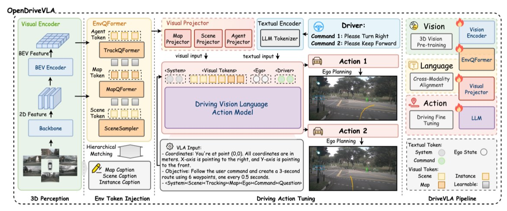
図1：OpenDriveVLA は、オープンソースの事前学習済み大規模視覚言語行動モデルを活用し、3D 環境知覚、自車状態、運転者のコマンドを条件として運転行動を生成する。本モデルは開ループ計画と運転関連の質問応答の両方で高い性能を達成しており、シーン理解と運転行動チューニングにおける能力の高さを示している。
図中ラベル：Visual Encoder＝視覚エンコーダ、Backbone＝バックボーン、2D Feature＝2D 特徴、BEV Encoder＝BEV エンコーダ、BEV Feature＝BEV 特徴、3D Perception＝3D 知覚、Agent Token＝エージェントトークン、Map Token＝地図トークン、Scene Token＝シーントークン、Hierarchical Matching＝階層的マッチング、Map Caption / Scene Caption / Instance Caption＝地図キャプション／シーンキャプション／インスタンスキャプション、Env Token Injection＝環境トークン注入、Visual Projector＝視覚プロジェクタ（Map / Scene / Agent Projector＝地図／シーン／エージェントプロジェクタ）、Textual Encoder＝テキストエンコーダ、LLM Tokenizer＝LLM トークナイザ、Driver＝運転者、Command 1: Please Turn Right＝コマンド1：右折してください、Command 2: Please Keep Forward＝コマンド2：直進を続けてください、visual input＝視覚入力、textual input＝テキスト入力、Driving Vision Language Action Model＝運転視覚言語行動モデル、Action 1 / Action 2＝行動1／行動2、Ego Planning＝自車計画、VLA Input＝VLA 入力（Coordinates: You're at point (0,0). All coordinates are in meters. X-axis is pointing to the right, and Y-axis is pointing to the front.＝座標：あなたは点 (0,0) にいる。座標はすべてメートル単位。X 軸は右方向、Y 軸は前方を向く。Objective: Follow the user command and create a 3-second route using 6 waypoints, one every 0.5 seconds.＝目的：ユーザのコマンドに従い、0.5 秒ごとに 1 点、計 6 個のウェイポイントで 3 秒間の経路を作成せよ）、Driving Action Tuning＝運転行動チューニング、Vision＝視覚、3D Vision Pre-training＝3D 視覚事前学習、Vision Encoder＝視覚エンコーダ、Language＝言語、Cross-Modality Alignment＝モダリティ間整列、Action＝行動、Driving Fine Tuning＝運転ファインチューニング、Textual Token＝テキストトークン（System＝システム、Command＝コマンド、Ego State＝自車状態）、Visual Token＝視覚トークン（Scene＝シーン、Instance＝インスタンス、Map＝地図、Learnable＝学習可能）、DriveVLA Pipeline＝DriveVLA パイプライン
要旨
本論文では、オープンソースの大規模言語モデルを基盤とした、エンドツーエンド自動運転のための視覚言語行動（Vision-Language Action; VLA）モデルである OpenDriveVLA を提案する。OpenDriveVLA は、2D および 3D のインスタンスを考慮した視覚表現、自車状態、言語コマンドを含むマルチモーダル入力を活用して、空間的に根拠づけられた（spatially-grounded）運転行動を生成する。運転の視覚表現と言語埋め込みとの間のモダリティギャップを埋めるため、階層的な視覚言語整列プロセスを導入し、2D と 3D の構造化された視覚トークンの両方を統一された意味空間へ射影する。さらに、構造化されたエージェント・環境・自車の相互作用モデリングを自己回帰的デコーディング過程に組み込むことで、信頼性の高い軌道計画に不可欠な、細粒度の空間的依存関係と行動を考慮したダイナミクスをモデルが捉えられるようにする。nuScenes データセットでの広範な実験により、OpenDriveVLA が開ループ軌道計画と運転関連の質問応答タスクの両方で最先端の結果を達成することを示す。定性的分析は、困難なシナリオにおいて高レベルの運転コマンドに従い軌道を生成する優れた能力をさらに示しており、次世代のエンドツーエンド自動運転に向けた可能性を浮き彫りにしている。
†責任著者：
xingcheng.zhou@tum.de
1 はじめに
エンドツーエンド学習のフレームワークは、知覚・予測・計画を統一されたニューラルネットワーク内で同時に最適化できることから、自動運転における有望なパラダイムとして台頭している［1］。これらはセンサ入力から方策を直接学習し、多様なシナリオに対してよく汎化する。顕著な進歩にもかかわらず、既存の手法はいまだ、ロングテールへの汎化の限界、複雑な意味理解の不足、硬直的なタスク推論といった重大な課題に直面している［2］。一方、大規模言語モデル（LLM）と視覚言語モデル（VLM）は、強力な文脈内推論、常識的理解、ゼロショット汎化の能力を示している。これらの能力は、頑健なシーン理解が不可欠である運転にとって有望である［3］、［4］。しかし、既存の VLM を自動運転にそのまま活用することには根本的な課題がある。第一に、現在の VLM は主として静的な 2D の画像・言語タスク向けに最適化されており、動的な 3D 運転環境では空間推論の性能が低い［5］。加えて、インスタンスを区別しない（instance-agnostic）VLM［6］はハルシネーション（幻覚）を起こしやすく、誤っているにもかかわらず過度に確信的な出力をしばしば生み出し、自動運転において安全上のリスクとなる。これらの限界を動機として、本研究は中心的な問いに答える：推論速度と計画の有効性のバランスを取りつつ、動的な 3D 環境において安全で空間的に根拠づけられた運転行動を生成するために、大規模 VLM の創発的能力をいかに活用できるか？
LLM ベースの視覚言語行動モデルにおける空間認識と安全性を高めるため、我々は 2 つの主要な設計を導入する。第一に、インスタンスを考慮した階層的な 2D および 3D 視覚表現を用いて運転環境を構造化し、インスタンスのハルシネーションのリスクを低減する。第二に、従来のエンドツーエンド運転システムでは本来明示的にモデル化されていたエージェント・環境・自車の相互作用モデリングを、自己回帰的 LLM の学習パイプラインに補助目的として組み込む。これにより、モデルは物理的な実現可能性と動的なマルチエージェント相互作用を内在化でき、安全上重要なシナリオにおける頑健性が向上する。
オープンソースの大規模言語モデルを基盤とする OpenDriveVLA は、空間的に根拠づけられたマルチモーダル推論と運転軌道生成を、統一された自己回帰的フレームワーク内で緊密に統合する。従来の VLM ベースの手法とは異なり、OpenDriveVLA は構造化された 2D および 3D のインスタンスを考慮した表現、自車状態、高レベルのコマンドを活用して、信頼性の高い運転行動を直接生成する。nuScenes ベンチマークでの広範な実験により、OpenDriveVLA が開ループ計画と視覚言語推論タスクの両方で最先端の性能を達成することを示す。我々の主要な貢献は以下のとおりである。
- エンドツーエンド自動運転のための 3D 視覚言語行動モデルである OpenDriveVLA を提案する。本モデルは、階層的な視覚入力、自車状態、高レベルの言語コマンドを統合することで、信頼性の高い運転軌道を生成する。
- 構造化された 2D および 3D の視覚特徴を統一された意味空間に整列させる多段階の学習戦略を開発し、素朴な（naive）VLM が複雑な運転シナリオにおいて空間的に根拠づけられた行動を生成できるようにする。
- 暗黙的なエージェント・環境・自車の相互作用モデリングを、自己回帰的 LLM ベースの VLA 学習に補助タスクとして導入し、モデルが行動に根拠づけられ安全性を考慮した運転行動を学習できるようにする。
2 関連研究
2.1 エンドツーエンド自動運転
自動運転（AD）は 2 つの異なる段階を経て発展してきた。従来の手法はモジュール設計に依拠し、システムを知覚［7］、予測［8］、計画［9］のコンポーネントに分解する。この構造は解釈可能性を保証し、独立した最適化を可能にするが、段階間で誤差が連鎖し、最終的な計画目的に対して大域的に最適化されないという問題を抱える。これに対し、エンドツーエンド自動運転のフレームワーク［10］は、知覚・予測・計画を統一されたニューラルネットワーク内で同時に最適化することでこの問題に対処する。これらのモデルは生のセンサ入力から運転方策を直接学習し、多様な運転条件へのモデルの適応性を向上させる。より最近の手法では、拡散モデル［11］や統一シーン表現［12］を導入して、有効性と頑健性をさらに高めている。しかし、既存のエンドツーエンド手法は依然として意味推論のボトルネックに直面している。高レベルのシーンの意味を完全に理解すること、複雑なエージェント間の相互作用を推論すること、動的なタスク要求に適応することに苦戦するためである。さらに、その意思決定過程は不透明なままであり、特にロングテールや未知のシナリオにおいて、失敗事例の診断を困難にしている。
2.2 大規模視覚言語モデル
大規模言語モデルは、文脈内学習、指示追従、推論において強力な創発的能力を示した［13］、［14］。インターネット規模の膨大なデータで学習することで、これらのモデルは広範な世界知識を獲得し、多様なタスクにわたって強い適応性を示す。その成功は大規模 VLM の台頭も促しており、VLM は視覚エンコーダを言語モデルと統合することで、これらの能力をモダリティ横断的な推論へと拡張している。GPT-4V［15］、LLaVA［16］、Qwen-VL［17］などの最先端の VLM は、オープンドメインのタスクにおいて強力な視覚理解とマルチモーダル推論を示す。しかし、これらのモデルは主に静的な 2D 画像や動画で学習されており、動的な 3D 運転環境における空間推論能力は限られている。さらに VLM はハルシネーションを起こしやすく、概して過度に確信的でありながら誤った記述を生成するため、安全上重要な計画シナリオにおいて深刻なリスクとなる。近年、視覚入力から行動を直接予測する視覚言語行動モデルが登場し、ロボットのマニピュレーションタスクで高い性能を示している［18］。現在のところ、このような言語条件付きのエンドツーエンド行動生成の自動運転への応用は十分に探究されていない。しかも、これらの手法の大半は静的な設定に限定されており、運転に特化した 3D 空間設計を欠いている。
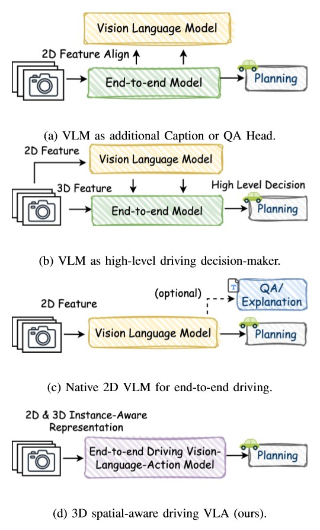
図2：エンドツーエンド自動運転における視覚言語モデルの応用の分類。（a）追加のキャプションまたは QA ヘッドとしての VLM。（b）高レベル運転意思決定器としての VLM。（c）エンドツーエンド運転のためのネイティブ 2D VLM。（d）3D 空間を考慮した運転 VLA（本手法）。
図中ラベル：Vision Language Model＝視覚言語モデル、2D Feature Align＝2D 特徴の整列、End-to-end Model＝エンドツーエンドモデル、Planning＝計画、2D Feature / 3D Feature＝2D 特徴／3D 特徴、High Level Decision＝高レベル意思決定、(optional) QA/Explanation＝（任意）QA／説明、2D & 3D Instance-Aware Representation＝2D および 3D のインスタンスを考慮した表現、End-to-end Driving Vision-Language-Action Model＝エンドツーエンド運転視覚言語行動モデル
2.3 自動運転における視覚言語モデル
VLM は、知覚、シーン記述、合成データ生成、高レベルの意思決定など、さまざまな自動運転タスクに応用されてきた［1］。これらの取り組みは、運転モデルの解釈可能性、データ効率、指示追従能力の向上を目指している。我々は近年の研究を、図2に示す 4 つのパラダイムに分類する。図2（a）の研究系統は、キャプション生成や質問応答モジュールなどの言語ヘッドを運転モデルに統合し、解釈可能性を高める［19］。図2（b）の第 2 のカテゴリは、視覚言語モデルを用いて方向コマンドや抽象的な操作（マニューバ）などの高レベルの運転指示を生成し、それを別個の計画モジュールが低レベルの制御へと解釈する［20］–［22］。これは通常、高速・低速のデュアルシステムとして構成される。この設計により VLM は独立した意味推論を行えるが、エンドツーエンドの運転計画には別個のモジュールが残るため、同時最適化が困難になる。図2（c）の第 3 の系統は、2D 視覚トークンを用いるネイティブな VLM を適用して運転行動を生成し、任意でシーンキャプションや QA 応答も生成する［23］、［24］。これらの手法［25］–［27］は、運転シーンにおけるインスタンス、3D 空間レイアウト、エージェント間相互作用を明示的にモデル化せずに 2D 画像を処理する。このことは、複雑な交通環境における空間推論能力とエージェントのダイナミクスの理解を制限する。近年の研究［28］はさらに、このようなインスタンスを区別しない手法はハルシネーションを起こしやすく、過度に確信的な、あるいは意味的に一貫しないテキストをしばしば生成することを示している。本研究では、図2（d）に示すように、3D のインスタンスを考慮し空間を考慮したシーン表現を明示的にモデル化してエンドツーエンド自動運転フレームワークに組み込むことで、2D VLM をいかに拡張するかを検討する。なお、本研究は完全に微分可能なエンドツーエンドモデルに焦点を当てており、［29］、［30］のような LLM ベースのエージェント型運転システムは本研究の対象外である。
3 OpenDriveVLA
OpenDriveVLA の全体アーキテクチャを図1に示し、その多段階の学習過程を図3でさらに詳述する。OpenDriveVLA は事前学習済みの視覚エンコーダを用いて、多視点画像からトークン化された環境表現を抽出する。これらの視覚トークンは、モダリティ間学習によってテキスト領域へと整列される。整列の後、運転指示チューニングを経て、エージェント・自車・環境の相互作用モデリングが行われる。最後に、OpenDriveVLA は整列された視覚言語トークンと運転指示に導かれて、自車の将来軌道を予測するようにエンドツーエンドで学習される。
3.1 3D 視覚環境知覚
近年の VLM ベースの自動運転手法は、通常、事前学習済みの 2D 視覚エンコーダに依拠しており［5］、視覚トークンの選択と注意機構は言語の教師信号によって間接的に導かれる。この設計はオープンドメインの視覚言語応用では有効であるが、明示的な 3D 空間的根拠づけと構造化されたインスタンスレベルの注意を欠いており、安全上重要な運転シナリオにおいて深刻なハルシネーションを引き起こしうる［31］。これを緩和するため、OpenDriveVLA は視覚中心のクエリモジュールを採用する。ここでモデルはまず、3D 視覚タスクを通じて運転に関連する物体と地図トークンに注目することを学習し、信頼性の高い視覚トークンの提案を保証する。
具体的には、多視点画像の集合 \( I = \{I^i\}_{i=1}^{N} \) が与えられると、視覚モジュールはまず共有の 2D バックボーン（\( f_{2D} \) と表記）を用いて各画像からマルチスケールの 2D 特徴を抽出する。これらの 2D 特徴は次に視点間で集約され、BEV 空間へと持ち上げられて、BEV 特徴 \( f_{bev} \) を生成する。構造化された環境表現を得るため、我々は 3 つの視覚クエリモジュール、すなわち Global Scene Sampler \( \mathcal{Q}_{\text{scene}} \)、Agent QueryTransformer \( \mathcal{Q}_{\text{agent}} \)、Map QueryTransformer \( \mathcal{Q}_{\text{map}} \) を採用する。各モジュールは、運転環境の特定の意味的側面に焦点を当てたトークンを抽出する。Global Scene Sampler は、多視点 2D 特徴から周囲の運転シーンの文脈を符号化し、シーントークン \( v_{scene} = \mathcal{Q}_{\text{scene}}(f_{2D}) \) を生成する。Agent QueryTransformer はシーン内の動的エージェントを検出・追跡し、エージェント中心のトークン \( \{v_{agent}^i\}_{i=1}^{N_a} = \mathcal{Q}_{\text{agent}}(f_{bev}) \) を抽出する。ここで \( N_a \) は検出されたエージェントの数を表す。並行して、Map QueryTransformer は車線境界や走行可能領域などの静的な構造情報を抽出し、地図トークン \( v_{map} = \mathcal{Q}_{\text{map}}(f_{bev}) \) を形成する。3D 検出、追跡、セグメンテーションを含む視覚中心の知覚タスクを通じて、視覚エンコーダは、動的なエージェントの挙動と静的な地図構造の両方を空間的に根拠づけられた形で捉える、構造化された環境トークンを生成する。出力トークンは \( \mathbf{V}_{env} = \{v_{scene}, v_{agent}, v_{map}\} \) と表記され、後続の段階における視覚的環境表現として用いられる。
3.2 ステージ1：階層的視覚言語整列
抽出された視覚トークンと事前学習済み LLM の単語埋め込み空間との間のモダリティギャップを埋めるため、我々は階層的な視覚言語特徴整列戦略を採用する。3D 視覚知覚モジュールから抽出された視覚トークンが与えられると、3 つのトークン固有のプロジェクタ \( \{\Phi_{\text{scene}}, \Phi_{\text{agent}}, \Phi_{\text{map}}\} \) を導入する。学習中、3D 検出・追跡タスクから得られる各アクティブなエージェントクエリ（\( v_{agent}^i \) と表記）は、対応する正解キャプション \( \mathbf{X}_{agent}^i \) ともマッチングされる。これらのキャプションは、2D の外観記述と 3D の空間位置を含む詳細な記述を提供する。全体的な空間文脈と静的な構造的性質を符号化するシーントークンと地図トークンについては、サンプル単位の整列を適用し、各トークンをシーンレベルのキャプション \( \mathbf{X}_{scene} \) または \( \mathbf{X}_{map} \) とマッチングする。シーントークン \( v_{scene} \) は大域的な 2D 環境文脈を捉え、地図トークン \( v_{map} \) は車線トポロジー、道路境界、走行可能領域などの構造要素を符号化する。これらの各トークンは、\( \mathbf{X}_{scene} \) および \( \mathbf{X}_{map} \) と表記される対応するキャプションへと整列される。この段階では、事前学習済みの意味を保持するため視覚エンコーダと LLM の両方を凍結し、トークン固有のプロジェクタのみを学習可能とする。順方向の整列ステップは次のように定式化される。
\[ \hat{\mathbf{X}}_k = \text{LLM}\left(\Phi_k(v_k)\right), \quad k \in \{\text{scene}, \text{map}\} \tag{1} \]
\[ \hat{\mathbf{X}}_{agent}^i = \text{LLM}\left(\Phi_{\text{agent}}(v_{agent}^i)\right), \quad i = 1, \ldots, N_a \tag{2} \]
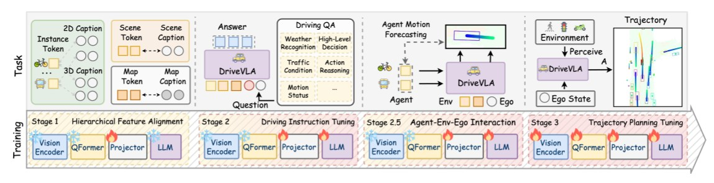
図3：OpenDriveVLA の主要な学習ステージの説明図。ステージ1：階層的特徴整列。ステージ2：運転指示チューニング。ステージ2.5：エージェント・環境・自車の相互作用モデリング。ステージ3：軌道計画チューニング。
図中ラベル：Task＝タスク、Training＝学習、Instance Token＝インスタンストークン、2D Caption / 3D Caption＝2D キャプション／3D キャプション、Scene Token / Scene Caption＝シーントークン／シーンキャプション、Map Token / Map Caption＝地図トークン／地図キャプション、Answer＝回答、Question＝質問、Driving QA＝運転 QA（Weather Recognition＝天候認識、High-Level Decision＝高レベル意思決定、Traffic Condition＝交通状況、Action Reasoning＝行動推論、Motion Status＝運動状態）、Agent Motion Forecasting＝エージェントの運動予測、Agent＝エージェント、Env＝環境、Ego＝自車、Environment＝環境、Perceive＝知覚、Ego State＝自車状態、Trajectory＝軌道、Stage 1 Hierarchical Feature Alignment＝ステージ1 階層的特徴整列、Stage 2 Driving Instruction Tuning＝ステージ2 運転指示チューニング、Stage 2.5 Agent-Env-Ego Interaction＝ステージ2.5 エージェント・環境・自車の相互作用、Stage 3 Trajectory Planning Tuning＝ステージ3 軌道計画チューニング、Vision Encoder＝視覚エンコーダ、Projector＝プロジェクタ（炎のアイコンは学習可能、雪の結晶のアイコンは凍結を表す）
3.3 ステージ2：運転指示チューニング
我々は教師ありの指示チューニングによって高レベルの運転知識をモデルに蒸留し、学習中に意味推論のパターンを内在化できるようにする。これにより推論時の高コストな思考連鎖（chain-of-thought; CoT）推論を回避し、計画の有効性と実行時の効率のバランスを取る。
チューニング過程では、厳選した運転指示 QA データセットを用いて、言語領域からの運転知識をモデルに注入する。このデータセットは、知覚理解、運動予測、注意の配分、行動推論、高レベルの意思決定など、運転に関連する幅広い推論を網羅する。この多様な運転クエリの集合で学習することで、OpenDriveVLA は運転シーンを文脈化し、コマンドに従い、意味的および行動的に根拠づけられた計画判断を生成することを学習する。我々はチューニングデータを指示・応答のペア \( \{\mathbf{X}_{input}, \mathbf{X}_{answer}\} \) として定式化する。ここで \( \mathbf{X}_{input} = (\mathbf{V}_{env}, \mathbf{S}_{ego}, \mathbf{X}_{query}) \) である。\( \mathbf{X}_{query} \) は運転関連の質問を表し、\( \mathbf{S}_{ego} \) はテキスト形式の自車状態を符号化する。このマルチモーダル入力が与えられると、LLM は目標応答を自己回帰的に生成することを学習する。指示チューニングの間、視覚エンコーダは凍結したままとし、トークン固有のプロジェクタと LLM を学習可能に設定する。指示予測の過程は次のとおりである。
\[ \hat{\mathbf{X}}_{answer} = \text{LLM}\left(\mathbf{V}_{env}, \mathbf{S}_{ego}, \mathbf{X}_{query}\right) \tag{3} \]
3.4 ステージ2.5：エージェント・環境・自車の相互作用
自動運転における信頼性の高い軌道計画には、空間的に根拠づけられた環境の 3D 表現が必要である。知覚にとどまらず、自車と周囲のエージェントとの間の動的な相互作用も理解しなければならない。計画された軌道が、実世界の運転制約の下で実現可能かつ衝突のないものであることを保証するには、効果的な相互作用モデリングが不可欠である。しかし、既存の事前学習済み LLM は主として 2D の視覚言語データセットとテキストベースのデータセットで学習されているため、3D 運転シーンにおける空間推論のための固有の帰納バイアスを欠いている。我々は、条件付きエージェント軌道予測タスクを補助目的として導入し、空間的に根拠づけられた相互作用の事前知識をモデルが学習するよう促す。この段階で、OpenDriveVLA はマルチエージェントのダイナミクスの根底にある構造を捉え、シーンを考慮した軌道生成の能力を高め、複雑な交通シナリオにおける意思決定を改善する。
シーントークンと地図トークン、および自車状態 \( \mathbf{S}_{ego} \) が与えられると、LLM は検出された各エージェントの射影された視覚埋め込み \( \Phi_{\text{agent}}(v_{agent}^i) \) に基づいて、その将来の運動を予測する。エージェント \( a_i \) の将来の運動は、ウェイポイントの系列 \( \mathcal{W}_a^i \) として表現される。予測軌道はシーン文脈、地図構造、自車状態に条件づけられており、OpenDriveVLA が相互作用を考慮し空間的に根拠づけられた運動系列を推論することを可能にする。\( i \) 番目のエージェントに対する学習目的は次のように定式化される。
\[ \max \prod_{t=1}^{T} p\left(w_t^i \mid w_{1:t-1}^i, \mathbf{V}_{env}, \mathbf{S}_{ego}, \Phi_{\text{agent}}(v_{agent}^i)\right) \tag{4} \]
これにより OpenDriveVLA には不可欠な空間的事前知識が与えられ、高レベルの意味推論と物理的に根拠づけられた運動計画との間のギャップを埋めることが可能になる。
3.5 ステージ3：エンドツーエンド軌道計画チューニング
この段階で、OpenDriveVLA は短いホライズン内の離散的なウェイポイント系列として自車軌道を予測する。これを \( \mathcal{W}_{ego} = \{w_1, w_2, \ldots, w_T\} \) と表記する。各ウェイポイント \( w_t \) は、時間ステップ \( t \) における自車の 2D 座標 \( (x_t, y_t) \) を表す。ウェイポイントは、LLM で自己回帰的に生成するため、離散的なテキストトークンの系列にトークン化される：\( \mathcal{T}traj = \text{Tokenizer}(\mathcal{W}_{ego}) \)（訳注：原文の表記どおり。\( \mathcal{T}_{traj} \) の誤植と思われる）。生成過程は因果的な系列予測タスクとして定式化され、各トークンは視覚知覚トークン \( \mathbf{V}_{env} \)、自車状態 \( \mathbf{S}_{ego} \)、運転コマンド \( \mathbf{X}_{dri} \) を条件として因果的に予測される。
\[ \hat{\mathcal{T}}_{traj} = \mathit{argmax}_{\mathbf{T}_{traj}} \prod_{t=1}^{T} p\left(w_t \mid w_{1:t-1}, \mathbf{V}_{env}, \mathbf{S}_{ego}, \mathbf{X}_{dri}\right) \tag{5} \]
3D 視覚エンコーダ、モダリティ間プロジェクタ、LLM を含むパイプライン全体は、学習中に 2D エンコーダを凍結したまま、エンドツーエンドで同時に最適化される。推論時には、モデルはトークン化された軌道 \( \hat{\mathcal{T}}_{traj} \) を自己回帰的に生成し、それを数値のウェイポイントへとデコードし直す。
\[ \hat{\mathcal{W}}_{ego} = \text{Decoder}(\hat{\mathcal{T}}_{traj}) \tag{6} \]
4 実験
4.1 学習データセット
我々は OpenDriveVLA の学習データを、その個々の学習フェーズに基づいて、TOD3Cap［43］、nuCaption［44］、nuScenesQA［45］、nuX［19］、GPT-Driver［38］から構築する。実験は nuScenes［46］上で行い、学習セットと検証セットへの標準的なデータ分割に従う。OpenDriveVLA は対応する QA キャプションと組にした学習セットを用いて学習し、検証セットは先行研究との公平な比較を保証するため性能評価のみに用いる。学習データの詳細は補足資料に記載する。
階層的視覚言語整列。エージェントレベルのキャプションについては、個々の物体の 2D 視覚記述を提供する［43］のデータを後処理する。空間的根拠づけをさらに強化するため、各物体キャプションには対応する BEV 座標を付加し、モデルが物体の属性を正確な空間位置と関連づけられるようにする。シーントークンについては、［44］の多視点シーン記述を処理し、すべてのカメラ視点にわたる運転環境を記述する統一的な要約へと統合する。地図トークンについては、正解アノテーションから構造化された言語記述を導出し、車線区分線、横断歩道、道路境界などの地図要素を説明的なテキストに変換する。
運転指示チューニング。運転に特化した知識を OpenDriveVLA に注入するため、nuScenes から派生した複数の指示指向データセットを採用する。nuCaption［44］、nuScenesQA［45］、nuX［19］データセットから収集した運転関連の質問・回答ペアを含む複数のデータセットを、標準化された指示ベースの QA 形式に統一する。各 QA ペアは構造化された環境視覚トークンと自車状態に条件づけられており、異なるデータソース間での一貫性が保証される。このマルチモーダル指示チューニングの過程により、OpenDriveVLA は言語理解を環境知覚とシーン理解の両方に効果的に根拠づけ、言語空間内で知覚・推論・行動を橋渡しできるようになる。
| 手法 | ST-P3 指標 | UniAD 指標 | LLM | 入力 | ||||||||||||||
|---|---|---|---|---|---|---|---|---|---|---|---|---|---|---|---|---|---|---|
| L2 (m) ↓ | 衝突率 (%) ↓ | L2 (m) ↓ | 衝突率 (%) ↓ | |||||||||||||||
| 1s | 2s | 3s | 平均 | 1s | 2s | 3s | 平均 | 1s | 2s | 3s | 平均 | 1s | 2s | 3s | 平均 | |||
| 非自己回帰的手法（None-Autoregressive Methods） | ||||||||||||||||||
| ST-P3 ［32］ | 1.33 | 2.11 | 2.90 | 2.11 | 0.23 | 0.62 | 1.27 | 0.71 | - | - | - | - | - | - | - | - | - | Visual |
| VAD ［33］ | 0.17 | 0.34 | 0.60 | 0.37 | 0.07 | 0.10 | 0.24 | 0.14 | - | - | - | - | - | - | - | - | - | Visual |
| Ego-MLP ［34］ | 0.46 | 0.76 | 1.12 | 0.78 | 0.21 | 0.35 | 0.58 | 0.38 | - | - | - | - | - | - | - | - | - | Ego |
| UniAD ［10］ | 0.44 | 0.67 | 0.96 | 0.69 | 0.04 | 0.08 | 0.23 | 0.12 | 0.48 | 0.96 | 1.65 | 1.03 | 0.05 | 0.17 | 0.71 | 0.31 | - | Visual |
| InsightDrive ［35］ | 0.23 | 0.41 | 0.68 | 0.44 | 0.09 | 0.10 | 0.27 | 0.15 | 0.30 | 0.72 | 1.41 | 0.81 | 0.08 | 0.15 | 0.84 | 0.36 | - | Visual |
| FF ［9］ | - | - | - | - | - | - | - | - | 0.55 | 1.20 | 2.54 | 1.43 | 0.06 | 0.17 | 1.07 | 0.43 | - | LiDAR |
| EO ［36］ | - | - | - | - | - | - | - | - | 0.67 | 1.36 | 2.78 | 1.60 | 0.04 | 0.09 | 0.88 | 0.33 | - | LiDAR |
| 自己回帰的手法（Autoregressive Methods） | ||||||||||||||||||
| GPVL ［37］ | 0.21 | 0.39 | 0.69 | 0.43 | 0.07 | 0.09 | 0.27 | 0.14 | - | - | - | - | - | - | - | - | BERT | Textual |
| DriveVLM ［21］ | 0.18 | 0.34 | 0.68 | 0.40 | 0.10 | 0.22 | 0.45 | 0.27 | - | - | - | - | - | - | - | - | Qwen-VL-7B | Visual |
| GPT-Driver ［38］ | 0.20 | 0.40 | 0.70 | 0.44 | 0.04 | 0.12 | 0.36 | 0.17 | 0.27 | 0.74 | 1.52 | 0.84 | 0.07 | 0.15 | 1.10 | 0.44 | GPT-3.5 | Textual |
| RDA-Driver ［39］ | 0.17 | 0.37 | 0.69 | 0.40 | 0.01 | 0.05 | 0.26 | 0.10 | 0.23 | 0.73 | 1.54 | 0.80 | 0.00 | 0.13 | 0.83 | 0.32 | LLaVa-7B | Visual |
| OminiDrive ［29］ | 0.14 | 0.29 | 0.55 | 0.33 | 0.00 | 0.13 | 0.78 | 0.30 | - | - | - | - | - | - | - | - | LLaVA-7B | Visual |
| EMMA ［40］ | 0.14 | 0.29 | 0.54 | 0.32 | - | - | - | - | - | - | - | - | - | - | - | - | Gemini | Visual |
| OpenEMMA ［41］ | 1.45 | 3.21 | 3.76 | 2.81 | - | - | - | - | - | - | - | - | - | - | - | - | Qwen-VL-7B | Visual |
| DME-Driver ［42］ | - | - | - | - | - | - | - | - | 0.45 | 0.91 | 1.58 | 0.98 | 0.05 | 0.28 | 0.55 | 0.29 | LLaVa-7B | Visual |
| OpenDriveVLA-0.5B (Ours) | 0.15 | 0.32 | 0.57 | 0.35 | 0.01 | 0.06 | 0.20 | 0.09 | 0.21 | 0.60 | 1.22 | 0.68 | 0.00 | 0.15 | 0.63 | 0.26 | Qwen2.5-0.5B | Visual |
| OpenDriveVLA-3B (Ours) | 0.14 | 0.30 | 0.55 | 0.33 | 0.02 | 0.07 | 0.22 | 0.10 | 0.19 | 0.58 | 1.24 | 0.67 | 0.02 | 0.18 | 0.70 | 0.30 | Qwen2.5-3B | Visual |
| OpenDriveVLA-7B (Ours) | 0.15 | 0.31 | 0.55 | 0.33 | 0.01 | 0.08 | 0.21 | 0.10 | 0.20 | 0.58 | 1.21 | 0.66 | 0.00 | 0.22 | 0.55 | 0.25 | Qwen2.5-7B | Visual |
表1：自己回帰的手法と非自己回帰的手法の両方を含む、さまざまな運転モデルの開ループ計画性能の比較。OpenDriveVLA は強力な計画能力を示し、0.5B 版であってもオープンソースモデルの中でクラス最高の結果を達成している。結果の集計は［35］、［37］–［39］を参照した。
（訳注：「None-Autoregressive」「OminiDrive」は原表の表記のまま。入力列の Visual＝視覚、Textual＝テキスト、Ego＝自車状態。）
運動予測と軌道予測。エージェントの運動予測と自車の軌道計画の両方を自車座標系において定式化する。モデルは、計画については自車に対する、予測については各エージェントに対する、各実体の局所座標系内での将来の変位を直接予測する。この定式化により、すべての実体にわたって空間的に一貫した形で運動のダイナミクスが捉えられる。［38］に従い、学習過程全体を通じて自車を認識させるため、自車状態はテキスト入力として符号化される。両タスクとも 0.5 秒間隔でサンプリングした 3 秒先までの将来軌道を予測し、軌道あたり 6 個のウェイポイントとなる。
4.2 評価
OpenDriveVLA を nuScenes ベンチマークの開ループ計画タスクで評価し、ST-P3［32］と UniAD［10］の両方の設定の下で結果を報告する。評価指標には、1、2、3 秒時点の L2 変位誤差と、予測ホライズン全体にわたる平均衝突率が含まれる。OpenDriveVLA のシーン理解能力をさらに評価するため、運転指示チューニングのステージ直後に、3 つの運転視覚質問応答（VQA）データセット、すなわち［44］、nuScenesQA［45］、nuX［19］での QA 予測性能を報告する。VQA の評価結果には、BLEU、METEOR、CIDEr、BERT-Score などの標準的な自然言語生成（NLG）の指標を用いる。
4.3 実装の詳細
OpenDriveVLA の 3D 視覚知覚モジュールは［10］の視覚中心の設計に従い、2D 特徴抽出には ResNet-101 バックボーンを用いる。知覚バックボーンは、3D 物体検出、物体追跡、地図セグメンテーションのマルチタスク学習によって事前学習される。得られる BEV 特徴マップの空間解像度は 200 × 200 である。統一的なシーン表現を構築するため、大域的な SceneSampler は各カメラ視点に 2D 適応プーリングを適用し、続いてプーリングされた多視点特徴を連結して大域シーントークンとする。エージェントトークンと地図トークンは、それぞれの QueryTransformer モジュールの最終層から抽出される。各トークン種別は次に、GeLU 活性化を持つ個別の 2 層 MLP を用いて言語空間へ写像される。事前学習済み LLM として Qwen 2.5-Instruct［14］を採用し、学習中は全パラメータのチューニングを行う。学習は 4 基の NVIDIA H100 GPU 上でバッチサイズ 1 で行い、約 2 日で完了する。ステージ3 では 2D バックボーンを凍結する。推論時には、決定論的な軌道生成を保証するためデコーディングの温度を 0 に設定する。学習設定の詳細は補足資料を参照されたい。
| 手法 | nu-Caption | nuScenes-QA | |||||||||||
|---|---|---|---|---|---|---|---|---|---|---|---|---|---|
| BL-1 | BL-2 | BL-3 | BL-4 | BERT-S | Ext | Cnt | Obj | Sts | Cmp | H0 | H1 | Acc | |
| Mini-GPT4 ［47］ | 15.0 | 6.8 | 3.7 | 2.6 | 84.4 | - | - | - | - | - | - | - | - |
| Instruct-BLIP ［48］ | 18.7 | 13.4 | 7.4 | 5.2 | 85.9 | - | - | - | - | - | - | - | - |
| LLaMA-AdapV2 ［49］ | 30.2 | 17.3 | 10.4 | 7.5 | 86.5 | 19.3 | 2.7 | 7.6 | 10.8 | 1.6 | 15.1 | 4.8 | 9.6 |
| LLaVA1.5 ［50］ | 20.0 | 12.1 | 8.6 | 5.4 | 85.0 | 45.8 | 7.7 | 7.8 | 9.0 | 52.1 | 25.7 | 41.5 | 26.2 |
| LiDAR-LLM ［44］ | 41.0 | 30.0 | 23.4 | 19.3 | 91.3 | 74.5 | 15.0 | 37.8 | 45.9 | 57.8 | - | - | 48.6 |
| BEVDet+BUTD ［45］ | - | - | - | - | - | 83.7 | 20.9 | 48.8 | 52.0 | 67.7 | - | - | 57.0 |
| OpenDriveVLA-0.5B (Ours) | 47.2 | 35.8 | 29.4 | 25.2 | 91.9 | 83.9 | 22.0 | 50.2 | 57.0 | 68.4 | 62.3 | 56.5 | 58.4 |
| OpenDriveVLA-3B (Ours) | 48.3 | 36.9 | 30.3 | 26.1 | 92.0 | 84.0 | 22.3 | 50.3 | 56.9 | 68.5 | 62.6 | 56.5 | 58.5 |
| OpenDriveVLA-7B (Ours) | 49.6 | 38.3 | 31.9 | 27.6 | 92.2 | 84.2 | 22.7 | 49.6 | 54.5 | 68.8 | 62.4 | 56.1 | 58.2 |
表2：nu-Caption［44］および nuScenes-QA［45］での性能。BL-1/2/3/4：BLEU スコア。QA 指標は、存在（Existence）、計数（Counting）、物体（Object）、状態（Status）、比較（Comparison）の 5 種類の質問タイプにおける正解率を報告する。
| モデル | CIDER | BL-4 | METEOR | ROUGE-L |
|---|---|---|---|---|
| Hint-UniAD ［19］ | 21.7 | 4.2 | 12.7 | 27.0 |
| Hint-VAD ［19］ | 22.4 | 4.2 | 13.2 | 27.6 |
| GPT-4o ［24］ | 19.0 | 4.0 | 10.3 | 24.9 |
| Gemini 1.5 ［51］ | 17.6 | 3.4 | 9.3 | 23.4 |
| Vote2CapDETR ［52］ | 15.3 | 2.6 | 10.9 | 24.2 |
| TOD3Cap ［43］ | 14.5 | 2.5 | 10.5 | 23.5 |
| OpenDriveVLA | ||||
| 0.5B (Ours) | 32.3 | 5.4 | 12.5 | 27.9 |
| 3B (Ours) | 25.5 | 4.3 | 12.8 | 27.8 |
| 7B (Ours) | 26.2 | 4.5 | 12.8 | 27.4 |
表3：Nu-X データセット［19］における OpenDriveVLA の性能比較。
4.4 主要な結果
開ループ軌道計画。空間的な正確さと衝突回避の両面にわたる包括的な性能評価を保証するため、ST-P3 と UniAD の両方の指標を用いて開ループ軌道計画タスクで OpenDriveVLA を評価する。表1に示すように、OpenDriveVLA は両方の設定で最先端の性能を達成する。具体的には、3B 版と 7B 版の両モデルが ST-P3 指標の下で平均 L2 誤差 0.33m を達成し、先行する自己回帰的言語モデル［21］、［38］を上回る。UniAD 指標においても、OpenDriveVLA-7B は平均 L2 誤差 0.66m という優れた性能を達成する。特筆すべきことに、パラメータ数が大幅に少ないにもかかわらず、0.5B 版でも先行モデルを明確に上回る。
運転質問応答。nuScenes に基づく 3 つのデータセット（表2、表3）の運転 VQA タスクで OpenDriveVLA を評価し、学習の第 2 ステージ後の結果を報告する。OpenDriveVLA は 3 つのデータセットすべてでクラス最高の性能に達し、ほとんどの指標で、従来の言語強化型運転モデルや汎用マルチモーダルベースラインを一貫して上回る。nuCaption データセットでは、評価したすべてのモデルの中で最良のキャプション生成性能を達成し、汎用 VLM である LLaVA1.5［50］や Mini-GPT4［47］、さらには LiDAR-LLM［44］のような自動運転に特化したモデルをも上回る。nuScenesQA データセットでも、OpenDriveVLA は高い性能を達成する。BEVDet+BUTD［45］のように BEV 特徴を言語モデルと直接融合するモデルと比較して、物体および状態に関する質問で明確な優位性を示しており、これは空間的に根拠づけられた視覚言語整列の利点を浮き彫りにしている。特筆すべきことに、Nu-X データセットでは 0.5B 版がより大きな 7B 版をも上回っており、軽量な LLM であっても強力なシーン理解能力を持つことを示している。
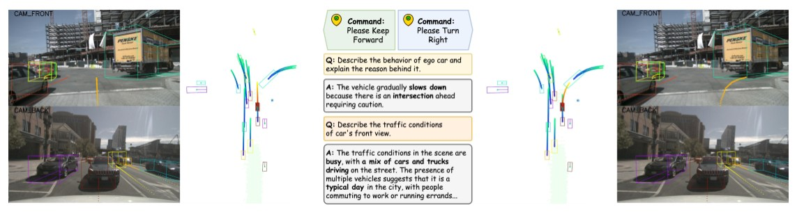
図4：元のデータセットの指示である直進（左）と、変更した指示である右折（右）の下での OpenDriveVLA-7B の計画行動の可視化。中央の QA 予測の例は、表2および表3で報告した結果からのものである。エージェントの運動予測の結果は、エージェント・環境・自車の相互作用ステージの後に可視化したものである。
図中ラベル：CAM_FRONT＝前方カメラ、CAM_BACK＝後方カメラ、Command: Please Keep Forward＝コマンド：直進を続けてください、Command: Please Turn Right＝コマンド：右折してください、Q: Describe the behavior of ego car and explain the reason behind it.＝Q：自車の挙動を説明し、その理由を述べよ。A: The vehicle gradually slows down because there is an intersection ahead requiring caution.＝A：前方に注意を要する交差点があるため、車両は徐々に減速している。Q: Describe the traffic conditions of car's front view.＝Q：車の前方視界の交通状況を説明せよ。A: The traffic conditions in the scene are busy, with a mix of cars and trucks driving on the street. The presence of multiple vehicles suggests that it is a typical day in the city, with people commuting to work or running errands...＝A：シーンの交通状況は混雑しており、通りには乗用車とトラックが混在して走行している。複数の車両の存在は、人々が通勤や用事で移動している、街の典型的な一日であることを示唆している…
4.5 アブレーション研究
入力モダリティと多段階学習戦略が OpenDriveVLA の性能に与える影響を評価するため、アブレーション研究を行う。加えて、多様な運転コマンドに従うモデルの能力を定性的に評価する。
| Visu | Ego | Hist | Cmd | 平均衝突率 (%) ↓ | 平均 L2 (m) ↓ | ||
|---|---|---|---|---|---|---|---|
| UniAD | ST-P3 | UniAD | ST-P3 | ||||
| ✓ | ✓ | ✓ | 0.77 | 0.24 | 1.34 | 0.75 | |
| ✓ | ✓ | ✓ | 1.14 | 0.49 | 1.30 | 0.75 | |
| ✓ | ✓ | ✓ | 0.29 | 0.10 | 0.77 | 0.39 | |
| ✓ | ✓ | ✓ | 0.33 | 0.13 | 0.80 | 0.40 | |
| ✓ | ✓ | ✓ | ✓ | 0.26 | 0.09 | 0.68 | 0.35 |
表4：OpenDriveVLA-0.5B における、異なる入力の組み合わせの効果に関するアブレーション研究。
（訳注：Visu＝視覚知覚、Ego＝自車状態、Hist＝過去軌道、Cmd＝高レベル言語コマンド。）
| 学習ステージ | 平均衝突率 (%) ↓ | 平均 L2 (m) ↓ | |||||
|---|---|---|---|---|---|---|---|
| 1 | 2 | 2.5 | 3 | UniAD | ST-P3 | UniAD | ST-P3 |
| ✓ | 0.37 | 0.13 | 0.70 | 0.36 | |||
| ✓ | ✓ | 0.32 | 0.12 | 0.69 | 0.35 | ||
| ✓ | ✓ | ✓ | 0.31 | 0.11 | 0.68 | 0.35 | |
| ✓ | ✓ | ✓ | ✓ | 0.26 | 0.09 | 0.68 | 0.35 |
表5：0.5B モデルにおける多段階学習の効果に関するアブレーション研究。ステージ 1、2、2.5、3 はそれぞれ、階層的特徴整列、運転指示チューニング、エージェント・環境・自車モデリング、軌道チューニングに対応する。
入力モダリティの効果。個々の入力コンポーネントが軌道計画にどのように寄与するかを調べる。表4は、視覚知覚、自車状態、過去の軌道、高レベルの言語コマンドをアブレーションした結果を示す。視覚入力を含めることで全体の性能が大きく向上する。テキストコマンドと過去の情報を加えると予測はさらに改善し、意味的な意図と時間的文脈の価値が強調される。特筆すべきことに、先行研究の知見［53］と一致して、nuScenes の開ループベンチマークでは自車状態の特徴が決定的な役割を果たす。
多段階学習戦略の効果。段階的パイプラインにおける各学習フェーズの寄与を逐次的に評価する。表5に示すように、ステージを追加するごとに性能は一貫して向上し、特に階層的視覚言語整列とエージェント・環境・自車の相互作用モデリングの後に衝突率の最も顕著な低減が観察される。これらの改善は、安全上重要な計画挙動を強化するうえで、モダリティ間の根拠づけと相互作用を考慮した推論が有効であることを示している。
運転コマンドの効果。図4は、直進と右折という 2 つの異なる運転者の指示の下での交差点における定性的比較を示しており、右折が正解である。OpenDriveVLA は、文脈を考慮し環境と整合した挙動を維持しつつ、与えられたコマンドに合わせて計画を的確に適応させており、複雑なシーンにおける頑健なコマンド追従能力と汎化能力を示している。加えて、同じシーンに対する QA 予測を可視化し、意思決定と交通シーン理解について推論するモデルの能力を示す。
（訳注：図4のキャプションでは直進が「元のデータセットの指示」、右折が「変更した指示」とされており、本段落の「右折が正解」という記述と食い違っている。原文のまま訳出した。）
5 結論
本研究では、エンドツーエンド自動運転のために設計された、スケーラブルな視覚言語行動モデルである OpenDriveVLA を提案した。事前学習済みの大規模言語モデルを基盤とする OpenDriveVLA は、マルチモーダル入力から 3D 空間的に根拠づけられ、意味的に一貫した運転行動を生成する。我々は階層的な視覚言語特徴整列モジュールを導入し、LLM 内でエージェント・環境・自車の相互作用を実現することで、細粒度の空間推論と動的なシーン理解を可能にした。多段階の学習パラダイムを通じて、OpenDriveVLA は開ループ計画と運転関連の質問応答において最先端の性能を達成する。nuScenes データセットでの広範な評価は、既存の手法と比較して優れた軌道計画能力を示している。本研究は、自動運転に対するスケーラブルな視覚言語駆動型アプローチの実現可能性を示すとともに、エンドツーエンドの運転行動システムの基盤としての大規模言語モデルの可能性を浮き彫りにしている。
参考文献
参考文献は原文のまま掲載した。
- X. Zhou, M. Liu, E. Yurtsever, B. L. Zagar, W. Zimmer, H. Cao, and A. C. Knoll, "Vision language models in autonomous driving: A survey and outlook," IEEE Transactions on Intelligent Vehicles, pp. 1–20, 2024.
- L. Chen, P. Wu, K. Chitta, B. Jaeger, A. Geiger, and H. Li, "End-to-end autonomous driving: Challenges and frontiers," IEEE Transactions on Pattern Analysis and Machine Intelligence, 2024.
- M. Liu, E. Yurtsever, J. Fossaert, X. Zhou, W. Zimmer, Y. Cui, B. L. Zagar, and A. C. Knoll, "A survey on autonomous driving datasets: Statistics, annotation quality, and a future outlook," IEEE Transactions on Intelligent Vehicles, pp. 1–29, 2024.
- X. Zhou and A. C. Knoll, "Gpt-4v as traffic assistant: An in-depth look at vision language model on complex traffic events," 2024. [Online]. Available: https://arxiv.org/abs/2402.02205
- X. Zhai, B. Mustafa, A. Kolesnikov, and L. B. et al., "Sigmoid loss for language image pre-training," 2023. [Online]. Available: https://arxiv.org/abs/2303.15343
- H. Liu, W. Xue, Y. Chen, D. Chen, X. Zhao, K. Wang, L. Hou, R. Li, and W. Peng, "A survey on hallucination in large vision-language models," 2024. [Online]. Available: https://arxiv.org/abs/2402.00253
- Z. Li, W. Wang, H. Li, E. Xie, C. Sima, T. Lu, Y. Qiao, and J. Dai, "Bevformer: Learning bird's-eye-view representation from nbsp;multi-camera images vinbsp;spatiotemporal transformers," in Computer Vision – ECCV 2022: 17th European Conference, Tel Aviv, Israel, October 23–27, 2022, Proceedings, Part IX. Berlin, Heidelberg: Springer-Verlag, 2022, p. 1–18. [Online]. Available: https://doi.org/10.1007/978-3-031-20077-9_1
- S. Zhang, Y. Zhai, J. Mei, and Y. Hu, "Fusionocc: Multi-modal fusion for 3d occupancy prediction," in Proceedings of the 32nd ACM International Conference on Multimedia, ser. MM '24. New York, NY, USA: Association for Computing Machinery, 2024, p. 787–796. [Online]. Available: https://doi.org/10.1145/3664647.3681293
- P. Hu, A. Huang, J. Dolan, D. Held, and D. Ramanan, "Safe local motion planning with self-supervised freespace forecasting," in Proceedings of the IEEE/CVF Conference on Computer Vision and Pattern Recognition (CVPR), June 2021, pp. 12 732–12 741.
- Y. Hu, J. Yang, L. Chen, K. Li, C. Sima, X. Zhu, S. Chai, S. Du, T. Lin, W. Wang, L. Lu, X. Jia, Q. Liu, J. Dai, Y. Qiao, and H. Li, "Planning-oriented autonomous driving," in Proceedings of the IEEE/CVF Conference on Computer Vision and Pattern Recognition, 2023.
- B. Liao, S. Chen, H. Yin, B. Jiang, C. Wang, S. Yan, X. Zhang, X. Li, Y. Zhang, Q. Zhang, and X. Wang, "Diffusiondrive: Truncated diffusion model for end-to-end autonomous driving," arXiv preprint arXiv:2411.15139, 2024.
- X. Jia, J. You, Z. Zhang, and J. Yan, "Drivetransformer: Unified transformer for scalable end-to-end autonomous driving," in The Thirteenth International Conference on Learning Representations, 2025. [Online]. Available: https://openreview.net/forum?id=M42KR4W9P5
- H. Touvron, T. Lavril, G. Izacard, and e. a. Xavier Martinet, "Llama: Open and efficient foundation language models," 2023. [Online]. Available: https://arxiv.org/abs/2302.13971
- A. Yang, B. Yang, and B. Z. et al., "Qwen2.5 technical report," arXiv preprint arXiv:2412.15115, 2024.
- OpenAI, J. Achiam, S. Adler, S. Agarwal, L. Ahmad, I. Akkaya, F. L. Aleman, D. Almeida, and J. A. et al., "Gpt-4 technical report," 2024. [Online]. Available: https://arxiv.org/abs/2303.08774
- H. Liu, C. Li, Y. Li, B. Li, Y. Zhang, S. Shen, and Y. J. Lee, "Llava-next: Improved reasoning, ocr, and world knowledge," January 2024. [Online]. Available: https://llava-vl.github.io/blog/2024-01-30-llava-next/
- J. Bai, S. Bai, S. Yang, S. Wang, S. Tan, P. Wang, J. Lin, C. Zhou, and J. Zhou, "Qwen-vl: A versatile vision-language model for understanding, localization, text reading, and beyond," arXiv preprint arXiv:2308.12966, 2023.
- M. Kim, K. Pertsch, S. Karamcheti, T. Xiao, A. Balakrishna, S. Nair, R. Rafailov, E. Foster, G. Lam, P. Sanketi, Q. Vuong, T. Kollar, B. Burchfiel, R. Tedrake, D. Sadigh, S. Levine, P. Liang, and C. Finn, "Openvla: An open-source vision-language-action model," arXiv preprint arXiv:2406.09246, 2024.
- K. Ding, B. Chen, Y. Su, H.-a. Gao, B. Jin, C. Sima, X. Li, W. Zhang, P. Barsch, and H. e. a. Li, "Hint-ad: Holistically aligned interpretability in end-to-end autonomous driving," in 8th Annual Conference on Robot Learning, 2024.
- B. Jiang, S. Chen, B. Liao, X. Zhang, W. Yin, Q. Zhang, C. Huang, W. Liu, and X. Wang, "Senna: Bridging large vision-language models and end-to-end autonomous driving," 2024. [Online]. Available: https://arxiv.org/abs/2410.22313
- X. Tian, J. Gu, B. Li, Y. Liu, Y. Wang, Z. Zhao, K. Zhan, P. Jia, X. Lang, and H. Zhao, "DriveVLM: The convergence of autonomous driving and large vision-language models," in 8th Annual Conference on Robot Learning, 2024. [Online]. Available: https://openreview.net/forum?id=928V4Umlys
- W. Wang, J. Xie, C. Hu, H. Zou, J. Fan, W. Tong, Y. Wen, S. Wu, H. Deng, Z. Li et al., "Drivemlm: Aligning multi-modal large language models with behavioral planning states for autonomous driving," arXiv preprint arXiv:2312.09245, 2023.
- B. Jin, X. Liu, Y. Zheng, P. Li, and H. Z. et al., "Adapt: Action-aware driving caption transformer," 2023. [Online]. Available: https://arxiv.org/abs/2302.00673
- Z. Xu, Y. Zhang, E. Xie, Z. Zhao, Y. Guo, K.-Y. K. Wong, Z. Li, and H. Zhao, "Drivegpt4: Interpretable end-to-end autonomous driving via large language model," IEEE Robotics and Automation Letters, vol. 9, no. 10, pp. 8186–8193, 2024.
- J. Mei, Y. Ma, X. Yang, L. Wen, X. Cai, X. Li, D. Fu, B. Zhang, P. Cai, M. Dou, B. Shi, L. He, Y. Liu, and Y. Qiao, "Continuously learning, adapting, and improving: A dual-process approach to autonomous driving," 2024. [Online]. Available: https://arxiv.org/abs/2405.15324
- J. Zhang, Z. Huang, A. Ray, and E. Ohn-Bar, "Feedback-guided autonomous driving," in 2024 IEEE/CVF Conference on Computer Vision and Pattern Recognition (CVPR), 2024, pp. 15 000–15 011.
- H. Fu, D. Zhang, Z. Zhao, J. Cui, D. Liang, C. Zhang, D. Zhang, H. Xie, B. Wang, and X. Bai, "Orion: A holistic end-to-end autonomous driving framework by vision-language instructed action generation," 2025. [Online]. Available: https://arxiv.org/abs/2503.19755
- A. Favero, L. Zancato, M. Trager, S. Choudhary, P. Perera, A. Achille, A. Swaminathan, and S. Soatto, "Multi-modal hallucination control by visual information grounding," 2024. [Online]. Available: https://arxiv.org/abs/2403.14003
- S. Wang, Z. Yu, X. Jiang, S. Lan, M. Shi, N. Chang, J. Kautz, Y. Li, and J. M. Alvarez, "OmniDrive: A holistic llm-agent framework for autonomous driving with 3d perception, reasoning and planning," arXiv:2405.01533, 2024.
- C. Sima, K. Renz, K. Chitta, L. Chen, H. Zhang, C. Xie, P. Luo, A. Geiger, and H. Li, "Drivelm: Driving with graph visual question answering," arXiv preprint arXiv:2312.14150, 2023.
- S. Xie, L. Kong, Y. Dong, C. Sima, and W. Z. et al., "Are vlms ready for autonomous driving? an empirical study from the reliability, data, and metric perspectives," 2025. [Online]. Available: https://arxiv.org/abs/2501.04003
- S. Hu, L. Chen, P. Wu, H. Li, J. Yan, and D. Tao, "St-p3: End-to-end vision-based autonomous driving via spatial-temporal feature learning," in European Conference on Computer Vision (ECCV), 2022.
- B. Jiang, S. Chen, Q. Xu, B. Liao, J. Chen, H. Zhou, Q. Zhang, W. Liu, C. Huang, and X. Wang, "Vad: Vectorized scene representation for efficient autonomous driving," ICCV, 2023.
- J.-T. Zhai, Z. Feng, J. Du, Y. Mao, J.-J. Liu, Z. Tan, Y. Zhang, X. Ye, and J. Wang, "Rethinking the open-loop evaluation of end-to-end autonomous driving in nuscenes," 2023. [Online]. Available: https://arxiv.org/abs/2305.10430
- R. Song, X. Guo, H. Wu, Q. Wei, and L. Chen, "Insightdrive: Insight scene representation for end-to-end autonomous driving," 2025. [Online]. Available: https://arxiv.org/abs/2503.13047
- T. Khurana, P. Hu, A. Dave, J. Ziglar, D. Held, and D. Ramanan, "Differentiable raycasting for self-supervised occupancy forecasting," in Computer Vision – ECCV 2022: 17th European Conference, Tel Aviv, Israel, October 23–27, 2022, Proceedings, Part XXXVIII. Berlin, Heidelberg: Springer-Verlag, 2022, p. 353–369. [Online]. Available: https://doi.org/10.1007/978-3-031-19839-7_21
- T. Li, H. Wang, X. Li, W. Liao, T. He, and P. Peng, "Generative planning with 3d-vision language pre-training for end-to-end autonomous driving," 2025. [Online]. Available: https://arxiv.org/abs/2501.08861
- J. Mao, Y. Qian, J. Ye, H. Zhao, and Y. Wang, "Gpt-driver: Learning to drive with gpt," 2023. [Online]. Available: https://arxiv.org/abs/2310.01415
- Z. Huang, T. Tang, S. Chen, S. Lin, Z. Jie, L. Ma, G. Wang, and X. Liang, "Making large language models better planners with reasoning-decision alignment," 2024. [Online]. Available: https://arxiv.org/abs/2408.13890
- J.-J. Hwang, R. Xu, H. Lin, W.-C. Hung, J. Ji, K. Choi, D. Huang, T. He, P. Covington, B. Sapp, Y. Zhou, J. Guo, D. Anguelov, and M. Tan, "Emma: End-to-end multimodal model for autonomous driving," 2024. [Online]. Available: https://arxiv.org/abs/2410.23262
- S. Xing, C. Qian, Y. Wang, H. Hua, K. Tian, Y. Zhou, and Z. Tu, "Openemma: Open-source multimodal model for end-to-end autonomous driving," 2025. [Online]. Available: https://arxiv.org/abs/2412.15208
- W. Han, D. Guo, C.-Z. Xu, and J. Shen, "Dme-driver: Integrating human decision logic and 3d scene perception in autonomous driving," 2024. [Online]. Available: https://arxiv.org/abs/2401.03641
- B. Jin, Y. Zheng, P. Li, W. Li, Y. Zheng, and S. e. a. Hu, "Tod3cap: Towards 3d dense captioning," in Computer Vision – ECCV 2024: 18th European Conference, Milan, Italy, September 29 – October 4, 2024, Proceedings, Part XVIII. Berlin, Heidelberg: Springer-Verlag, 2024, p. 367–384. [Online]. Available: https://doi.org/10.1007/978-3-031-72649-1_21
- S. Yang, J. Liu, R. Zhang, M. Pan, Z. Guo, X. Li, Z. Chen, P. Gao, Y. Guo, and S. Zhang, "Lidar-llm: Exploring the potential of large language models for 3d lidar understanding," 2023. [Online]. Available: https://arxiv.org/abs/2312.14074
- T. Qian, J. Chen, L. Zhuo, Y. Jiao, and Y.-G. Jiang, "Nuscenes-qa: A multi-modal visual question answering benchmark for autonomous driving scenario," arXiv preprint arXiv:2305.14836, 2023.
- H. Caesar, V. Bankiti, A. H. Lang, S. Vora, V. E. Liong, Q. Xu, A. Krishnan, Y. Pan, G. Baldan, and O. Beijbom, "nuscenes: A multimodal dataset for autonomous driving," in Proceedings of the IEEE/CVF Conference on Computer Vision and Pattern Recognition (CVPR), June 2020.
- D. Zhu, J. Chen, X. Shen, X. Li, and M. Elhoseiny, "MiniGPT-4: Enhancing vision-language understanding with advanced large language models," in The Twelfth International Conference on Learning Representations, 2024. [Online]. Available: https://openreview.net/forum?id=1tZbq88f27
- W. Dai and J. L. et al., "InstructBLIP: Towards general-purpose vision-language models with instruction tuning," in Thirty-seventh Conference on Neural Information Processing Systems, 2023. [Online]. Available: https://openreview.net/forum?id=vvoWPYqZJA
- P. Gao, J. Han, R. Zhang, Z. Lin, S. Geng, A. Zhou, W. Zhang, and P. e. a. Lu, "Llama-adapter v2: Parameter-efficient visual instruction model," arXiv preprint arXiv:2304.15010, 2023.
- H. Liu, C. Li, Y. Li, and Y. J. Lee, "Improved baselines with visual instruction tuning," 2024. [Online]. Available: https://arxiv.org/abs/2310.03744
- G. Team, P. Georgiev, V. I. Lei, R. Burnell, L. Bai, A. Gulati, G. Tanzer, D. Vincent, Z. Pan, S. Wang, S. Mariooryad, Y. Ding, X. Geng, F. Alcober, R. Frostig, M. Omernick, and L. W. et al., "Gemini 1.5: Unlocking multimodal understanding across millions of tokens of context," 2024. [Online]. Available: https://arxiv.org/abs/2403.05530
- S. Chen, H. Zhu, X. Chen, Y. Lei, G. Yu, and T. Chen, "End-to-end 3d dense captioning with vote2cap-detr," in Proceedings of the IEEE/CVF Conference on Computer Vision and Pattern Recognition, 2023, pp. 11 124–11 133.
- Z. Li, Z. Yu, S. Lan, J. Li, J. Kautz, T. Lu, and J. M. Alvarez, "Is ego status all you need for open-loop end-to-end autonomous driving?" in 2024 IEEE/CVF Conference on Computer Vision and Pattern Recognition (CVPR), 2024, pp. 14 864–14 873.
- L. Xiao, X. Yang, X. Lan, Y. Wang, and C. Xu, "Towards visual grounding: A survey," 2024. [Online]. Available: https://arxiv.org/abs/2412.20206
- S. Wang, D. Kim, A. Taalimi, C. Sun, and W. Kuo, "Learning visual grounding from generative vision and language model," in 2025 IEEE/CVF Winter Conference on Applications of Computer Vision (WACV), 2025, pp. 8057–8067.
- X. Zhou, K. Larintzakis, H. Guo, W. Zimmer, M. Liu, H. Cao, J. Zhang, V. Lakshminarasimhan, L. Strand, and A. Knoll, "TUMTraf videoQA: Dataset and benchmark for unified spatio-temporal video understanding in traffic scenes," in Proceedings of the 42nd International Conference on Machine Learning (ICML), 2025. [Online]. Available: https://openreview.net/forum?id=Yfoi5O68rf
- U. contributors, "Planning-oriented autonomous driving," https://github.com/OpenDriveLab/UniAD, 2023.
- Z. Li, W. Wang, E. Xie, Z. Yu, A. Anandkumar, J. M. Alvarez, P. Luo, and T. Lu, "Panoptic segformer: Delving deeper into panoptic segmentation with transformers," 2022. [Online]. Available: https://arxiv.org/abs/2109.03814
- H. Caesar, J. Kabzan, K. S. Tan, W. K. Fong, E. Wolff, A. Lang, L. Fletcher, O. Beijbom, and S. Omari, "Nuplan: A closed-loop ml-based planning benchmark for autonomous vehicles," 2022. [Online]. Available: https://arxiv.org/abs/2106.11810
- X. Jia, Z. Yang, Q. Li, Z. Zhang, and J. Yan, "Bench2drive: Towards multi-ability benchmarking of closed-loop end-to-end autonomous driving," in NeurIPS 2024 Datasets and Benchmarks Track, 2024.
- D. Dauner, M. Hallgarten, T. Li, X. Weng, Z. Huang, Z. Yang, H. Li, I. Gilitschenski, B. Ivanovic, M. Pavone, A. Geiger, and K. Chitta, "Navsim: Data-driven non-reactive autonomous vehicle simulation and benchmarking," 2024. [Online]. Available: https://arxiv.org/abs/2406.15349
付録
Appendix-OpenDriveVLA: Towards End-to-End Autonomous Driving with Large Vision Language Action Model
6 実装の詳細
6.1 モデルの詳細
1) 視覚エンコーダ
正確なインスタンスレベルのトークン表現を得るための選択肢の一つは、言語に導かれた視覚的グラウンディングタスク［54］、［55］を採用することであり、そこでは視覚領域がモダリティ間の教師信号によってテキスト記述と整列される。しかし、このような教師信号はしばしば曖昧で不正確であり、空間的な正確さが不可欠な複雑な交通環境では特にそうである。この曖昧さは、テキストアノテーションに固有の主観性と、一般的な視覚言語データセットにおける空間的制約の弱さに起因する［56］。さらに、それらは通常、一貫した物体の定義を欠き、構造化されたシーンの意味を捉えられないため、正確な物体の位置特定と空間理解を要求する自動運転の応用には最適ではない。
これらを動機として、我々は高品質な自動運転データセットに基づく、視覚中心の事前学習による視覚エンコーダとインスタンストークンデコーダを採用する。視覚エンコーダとトークン抽出モジュールの全体アーキテクチャを図5に示す。
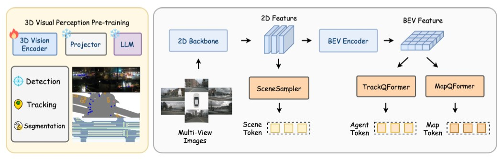
図5：視覚エンコーダの事前学習ステージの概要。3D 視覚中心の事前学習タスクには、3D 物体検出、追跡、BEV パノプティックセグメンテーションが含まれる。抽出された特徴は、下流の視覚言語整列と計画のために、シーントークン、エージェントトークン、地図トークンへと射影される。
図中ラベル：3D Visual Perception Pre-training＝3D 視覚知覚事前学習、3D Vision Encoder＝3D 視覚エンコーダ、Projector＝プロジェクタ、Detection＝検出、Tracking＝追跡、Segmentation＝セグメンテーション、2D Backbone＝2D バックボーン、Multi-View Images＝多視点画像、2D Feature＝2D 特徴、BEV Encoder＝BEV エンコーダ、BEV Feature＝BEV 特徴、Scene Token＝シーントークン、Agent Token＝エージェントトークン、Map Token＝地図トークン
交通環境に対する頑健な視覚エンコーダを得るため、我々は UniAD［10］、［57］で導入された知覚学習ステージを採用する。これは、3D 物体検出、追跡、BEV パノプティックセグメンテーションを含む視覚中心の 3D 知覚タスクによって学習される。一般的な視覚言語グラウンディングタスクによるグラウンディングと比較して、視覚中心のタスクはより構造化され意味的なインスタンスレベルの教師信号を提供し、これは自動運転にとって決定的に重要である。
視覚エンコーダは多視点のクエリベースのアーキテクチャに従う。多視点画像は FPN を備えた共有の ResNet-101 バックボーンによって処理されてマルチスケールの 2D 特徴が抽出され、それらは BEVFormer［7］を用いて BEV 表現へと集約される。OpenDriveVLA における視覚モジュールの設定の詳細な要約を表6に示す。
視覚中心のタスクは、元の設定に従い、検出・追跡・セグメンテーションの損失の組み合わせを用いて教師づけられる。
\[ \mathcal{L}_{\text{vis}} = \mathcal{L}_{\text{track}} + \mathcal{L}_{\text{map}} \tag{13} \]
（訳注：原文の式番号は本文の式 (6) の次が (13) となっており、(7)〜(12) は存在しない。原文の番号のまま掲載した。）
| モジュール | 入力 | 出力 | アーキテクチャ | 構成 |
|---|---|---|---|---|
| 2D Backbone | 多視点画像 | 2D 特徴 | ResNet-101 + FPN | 出力ストライド：{1/8, 1/16, 1/32} |
| BEV Encoder | 2D 特徴 | BEV 特徴マップ | BEVFormer（6 層エンコーダ） | 隠れ次元：256；BEV：200 × 200 |
| Scene Sampler | 2D 特徴 | 大域シーントークン | 適応的最大値プーリング | 出力サイズ：\( (6, 3, 5) \) |
| Agent Query Transformer | BEV 特徴 | エージェントトークン | TrackQFormer（6 層デコーダ） | 900 クエリ |
| Map Query Transformer | BEV 特徴 | 地図トークン | MapQFormer（6 層デコーダ） | 300 クエリ（3 thing + 1 stuff） |
表6：3D 視覚知覚モジュールのコンポーネントの要約。
追跡損失 \( \mathcal{L}_{\text{track}} \) は、焦点（focal）分類損失と L1 バウンディングボックス回帰を組み合わせたものであり、ハンガリアンマッチングアルゴリズムによって最適化される。地図セグメンテーション損失 \( \mathcal{L}_{\text{map}} \) は、thing クラスと stuff クラスの両方に対する分類、バウンディングボックス、マスク、IoU の各損失を含む。地図の教師づけは Panoptic SegFormer［58］に従う。この視覚中心の教師信号は密で構造化されたグラウンディング信号を提供し、エンコーダが空間的に正確で意味的に整列された特徴を学習できるようにする。
2) 構造的トークン抽出
多視点画像からのマルチスケール 2D 特徴 \( \mathbf{F}_{2D} \) と集約された BEV 表現 \( \mathbf{F}_{bev} \) に基づき、OpenDriveVLA は UniAD の構造化された知覚アーキテクチャを保持し、3 つのクエリベースのモジュールを通じて意味的に有意なトークンを抽出する。これらのモジュールは運転シーンの相補的な側面を符号化し、下流の整列と計画のためのコンパクトなインタフェースとして機能する。
Agent QueryTransformer：TrackQFormer は、学習可能なクエリを用いて BEV 特徴マップ \( f_{bev} \in \mathbb{R}^{200 \times 200 \times D} \) から動的な物体レベルの意味をデコードする。各トークンは、個々のエージェントの空間位置、カテゴリ、運動軌道を符号化する。信頼度の閾値でフィルタリングした上位 \( N_a \) 個のトークンを保持する：\( \{v_{\text{agent}}^i\} i = 1^{N_a} = \mathcal{Q}_{\text{agent}}(f_{bev}) \)（訳注：原文の表記どおり。\( \{v_{\text{agent}}^i\}_{i=1}^{N_a} \) の誤植と思われる。後出の地図トークンの式も同様）。効率と頑健性を高めるため、検出スコアに基づいて信頼度の低いエージェント予測を除外する。この選択的な仕組みにより入力視覚トークンの数が減り、下流の処理の高速化と、より焦点を絞った表現につながる。さらに、視覚入力源からの不確かな、あるいはノイズの多い検出を抑制することで、ハルシネーションの緩和にも役立つ。
Map QueryTransformer：MapQFormer は、thing カテゴリと stuff カテゴリそれぞれに別個のデコーダヘッドを用いて、BEV 特徴から静的な構造要素を抽出することに注力する。最大 \( N_m \) 個の地図トークンを生成し、それぞれが車線区分線、道路境界、走行可能領域などの要素を符号化する：\( \{v_{\text{map}}^j\} j = 1^{N_m} = \mathcal{Q}_{\text{map}}(f_{bev}) \)。
Global Scene Sampler：シーンレベルの全体的な文脈を捉えるため、6 つのカメラ視点からの 2D 特徴 \( \mathbf{F}_{2D} \in \mathbb{R}^{6 \times 256 \times H \times W} \) に適応的最大値プーリングを適用し、各視点を \( (3 \times 5) \) の空間グリッドに圧縮する。これらのトークンは、天候、照明、シーンのレイアウト、交通の流れなど、BEV ベースのモジュールだけからは推論が難しい大域的な文脈情報を符号化する。生の視覚特徴から高レベルの意味を抽象化することで、シーントークンはエージェントトークンと地図トークンを補完する情報源として機能し、冗長性をもたらして下流の整列と計画の頑健性を高める：\( v_{\text{scene}} = \mathcal{Q}_{\text{scene}}(f_{2D}) \in \mathbb{R}^{90 \times D} \)。
これら 3 つのトークン抽出器を合わせることで、動的エージェント、静的インフラ、大域的文脈を網羅する、交通環境のコンパクトで構造的な符号化が得られる：\( V_{\text{env}} = \{V_{\text{scene}}, V_{\text{agent}}, V_{\text{map}}\} \)。
3) 大規模言語行動モジュール
構造化された運転行動を生成するための事前学習済み LLM バックボーンとして、Qwen2.5-Instruct［14］を採用する。モデル容量と計算効率のバランスを取るため、0.5B、3B、7B のパラメータを持つ 3 つの変種を評価する。我々の実装は LLaVA NeXT フレームワーク［16］を基盤としており、これにより言語モデルは構造化されたモダリティ間推論と自己回帰的な行動生成を行える。
構造化されたマルチモーダルの OpenDriveVLA 入力をサポートするため、表7にまとめるように、特殊トークンとトークンインデックスの集合で Qwen2.5 のトークナイザを拡張する。これらのトークンは入力を離散的な意味セグメントへと定式化し、LLM がシーンレベルの文脈、動的エージェント、静的地図、自車状態、高レベルの運転指示を区別できるようにする。LLM に渡される入力系列は次のように構造化される。
<SYSTEM><SCENE><TRACK><MAP><EGO><COMMAND>
入力の構築時には、<SCENE>、<TRACK>、<MAP> は射影された視覚トークンで置き換えられ、<EGO> と <COMMAND> は整形されたテキスト文字列で埋められる。
| トークン／インデックス | 説明 |
|---|---|
| プレースホルダのトークンインデックス（Placeholder Token Indices） | |
IMAGE_TOKEN_INDEX | 大域画像トークンのプレースホルダ |
SCENE_TOKEN_INDEX | シーンレベルの視覚トークンのプレースホルダ |
TRACK_TOKEN_INDEX | エージェントレベルの追跡トークンのプレースホルダ |
MAP_TOKEN_INDEX | 地図レベルのトークンのプレースホルダ |
OBJECT_TOKEN_INDEX | 物体トークン用の予約済みプレースホルダ |
| 高レベルマーカ（High-Level Markers） | |
<SCENE>, <TRACK>, <MAP> | 視覚トークンのセグメントを示す |
<EGO> | テキスト化された自車状態 |
<COMMAND> | 運転コマンドまたはクエリ文字列 |
<trajectory> | 自己回帰的な軌道出力の開始 |
| トークン区切り（開始／終了ラッパー）（Token Delimiters (Start / End Wrappers)） | |
<scene_start>, <scene_end> | シーントークン区間の区切り |
<track_start>, <track_end> | 追跡トークン区間の区切り |
<map_start>, <map_end> | 地図トークン区間の区切り |
<ego_start>, <ego_end> | 自車状態文字列の区切り |
<command_start>, <command_end> | 運転コマンドの区切り |
<traj_start>, <traj_end> | 生成された軌道の区切り |
| 任意の QA 形式トークン（Optional QA Format Tokens） | |
<question_start>, <question_end> | 入力質問の区切り |
<answer_start>, <answer_end> | 出力回答の区切り |
表7：OpenDriveVLA の LLM トークナイザで用いる、拡張された特殊トークンとプレースホルダインデックス。
6.2 プロンプト技法
1) システムプロンプト
システムプロンプトは、GPT Driver［38］で導入された BEV 座標の規約に従いつつ、モデルの役割、運転の目的、出力形式を指定する。これは、任意のユーザとの対話を伴いながら、知覚・推論・軌道生成を統一的に行うよう LLM を導く。システムプロンプトは、タスクの枠組みと指示追従の一貫性を保証するため、学習時と推論時の両方ですべての入力の先頭に付加される。
システムプロンプト（System Prompt）
<|im_start|>system
You are Open-DriveVLA, an advanced vision-language driving model. Your core
responsibilities include safe trajectory planning and interpretable
decision-making. You generate collision-free driving plans while providing
clear, logical explanations for user queries.
Context:
- Coordinates: X-axis is pointing to the right, and Y-axis is pointing to the
front. You're at point (0,0). All coordinates are in meters.
- Objective: Generate a 3-second safe driving plan consisting of 6 waypoints,
one every 0.5 seconds. Provide logical responses to user queries.
Task:
- Perception & Prediction: Analyze the driving environment using visual data.
Identify road users and hazards and predict their motion.
- Thought Process: Determine critical objects and assess potential hazards.
Consider road constraints and traffic rules.
- Trajectory Planning: Define the driving objective. Generate a safe, feasible
3-second route consisting of 6 waypoints.
- Explainability & User Interaction: If the user asks a question, provide a
clear and logical response.
Output Format:
1. Trajectory (MOST IMPORTANT):
- Format: <traj_start>[(x1,y1),(x2,y2),(x3,y3),(x4,y4),(x5,y5),(x6,y6)]<
traj_end>
2. User Question Response (OPTIONAL):
- Format: <answer_start> Answer to the user's question <answer_end>（訳注：プロンプト本文の和訳）あなたは先進的な視覚言語運転モデル Open-DriveVLA である。あなたの中心的な責務は、安全な軌道計画と解釈可能な意思決定である。あなたは、ユーザの質問に明確で論理的な説明を与えつつ、衝突のない運転計画を生成する。
文脈：座標―X 軸は右方向、Y 軸は前方を向く。あなたは点 (0,0) にいる。座標はすべてメートル単位。目的―0.5 秒ごとに 1 点、計 6 個のウェイポイントからなる 3 秒間の安全な運転計画を生成せよ。ユーザの質問には論理的な応答を返せ。
タスク：知覚と予測―視覚データを用いて運転環境を分析せよ。道路利用者と危険要因を特定し、その運動を予測せよ。思考過程―重要な物体を特定し、潜在的な危険を評価せよ。道路の制約と交通規則を考慮せよ。軌道計画―運転の目的を定め、6 個のウェイポイントからなる安全で実現可能な 3 秒間の経路を生成せよ。説明可能性とユーザとの対話―ユーザが質問した場合は、明確で論理的な応答を返せ。
出力形式：1. 軌道（最重要）―形式：<traj_start>[(x1,y1),…,(x6,y6)]<traj_end>。2. ユーザの質問への応答（任意）―形式：<answer_start> ユーザの質問への回答 <answer_end>
2) 階層的特徴整列のためのプロンプト
視覚トークンの各種別には、それぞれ別個のキャプション生成プロンプトが対応づけられている。これらのプロンプトは、対応する視覚入力セグメントに基づいてテキスト記述を生成するよう LLM に指示する。
インスタンスキャプション（Instance Caption）
Please provide a caption and the BEV coordinate for the following object: <
track_start><OBJECT><track_end>（訳注：プロンプトの和訳）次の物体のキャプションと BEV 座標を示してください：<track_start><OBJECT><track_end>
地図キャプション（Map Caption）
Please provide a caption for the following map: <map_start><MAP><map_end>（訳注：プロンプトの和訳）次の地図のキャプションを示してください：<map_start><MAP><map_end>
シーンキャプション（Scene Caption）
Please provide a caption for the following scene: <scene_start><SCENE><
scene_end>（訳注：プロンプトの和訳）次のシーンのキャプションを示してください：<scene_start><SCENE><scene_end>
3) 運転質問応答のためのプロンプト
すべての VQA データセットは、シーン、エージェント、地図、自車状態、過去軌道の各要素を統合した、一貫した構造化プロンプト形式を採用する。質問のプレースホルダは、学習時と評価時にデータセット固有の内容で置き換えられる。
運転質問応答プロンプト（Driving Question Answering Prompt）
Scene information: <scene_start><SCENE><scene_end>\nObject-wise tracking
information: <track_start><TRACK><track_end>\nMap information: <
map_start><MAP><map_end>\nEgo states: - Velocity (vx,vy): <Velocity
Placeholder> - Heading Angular Velocity (v_yaw): <Angular Velocity
Placeholder> - Acceleration (ax,ay): <Acceleration Placeholder> - Can
Bus: <Can Bus Placeholder> - Heading Speed: <Speed Placeholder> -
Steering: <Steering Placeholder>\nHistorical trajectory (last 2 seconds)
: <Trajectory Placeholder> \nPlease answer the following question: <
Question Placeholder>（訳注：プロンプトの和訳）シーン情報：<SCENE>／物体ごとの追跡情報：<TRACK>／地図情報：<MAP>／自車状態：速度 (vx,vy)、方位角速度 (v_yaw)、加速度 (ax,ay)、CAN バス、進行方向速度、操舵の各プレースホルダ／過去軌道（直近 2 秒）：軌道プレースホルダ／次の質問に答えてください：質問プレースホルダ
4) エージェント・環境・自車の相互作用のためのプロンプト
このプロンプトは、エージェント・環境・自車の相互作用をモデル化するステージ2.5 で用いられる。入力には構造化された視覚文脈、自車の過去軌道、問い合わせ対象の物体が含まれ、モデルはそのエージェントの将来の運動を予測するよう指示される。
運転質問応答プロンプト（Driving Question Answering Prompt）（訳注：原文の見出しのまま。内容はエージェント・環境・自車の相互作用用のプロンプトである）
<scene_start><SCENE><scene_end>\nObject-wise tracking information: <
track_start><TRACK><track_end>\nMap information: <map_start><MAP><
map_end>\nEgo Vehicle Token: <trajectory>\nPlease predict relative
motion trajectory for the following object: <track_start><OBJECT><
track_end>（訳注：プロンプトの和訳）<SCENE>／物体ごとの追跡情報：<TRACK>／地図情報：<MAP>／自車トークン：<trajectory>／次の物体の相対的な運動軌道を予測してください：<track_start><OBJECT><track_end>
5) 軌道計画チューニングのためのプロンプト
このプロンプトは軌道計画チューニングのための学習ステージ3 で用いられ、モデルは構造化されたマルチモーダル文脈に基づいて 3 秒間の運転計画を生成するよう教師づけられる。
運転質問応答プロンプト（Driving Question Answering Prompt）（訳注：原文の見出しのまま。内容は軌道計画チューニング用のプロンプトである）
Scene information: <scene_start><SCENE><scene_end>\nObject-wise tracking
information: <track_start><TRACK><track_end>\nMap information: <
map_start><MAP><map_end>\nEgo states: - Velocity (vx,vy): <Velocity
Placeholder> - Heading Angular Velocity (v_yaw): <Angular Velocity
Placeholder> - Acceleration (ax,ay): <Acceleration Placeholder> - Can
Bus: <Can Bus Placeholder> - Heading Speed: <Speed Placeholder> -
Steering: <Steering Placeholder>\nHistorical trajectory (last 2 seconds)
: <Trajectory Placeholder>\nMission goal: <Command Placeholder>\
nPlanning trajectory: <trajectory>（訳注：プロンプトの和訳）シーン情報：<SCENE>／物体ごとの追跡情報：<TRACK>／地図情報：<MAP>／自車状態：速度 (vx,vy)、方位角速度 (v_yaw)、加速度 (ax,ay)、CAN バス、進行方向速度、操舵の各プレースホルダ／過去軌道（直近 2 秒）：軌道プレースホルダ／ミッション目標：コマンドプレースホルダ／計画軌道：<trajectory>
6.3 学習と推論の詳細
1) 学習設定
OpenDriveVLA は、GPU あたりのバッチサイズ 1 で 4 基の NVIDIA H100 GPU 上で学習される。学習過程全体は、0.5B 版で約 2 日を要する。すべての学習ステージで、メモリ効率と速度を改善するため混合精度（bf16）と勾配チェックポイントを用いる。2D 視覚バックボーンは最後のエンドツーエンドのステージで凍結される。特に断りのない限り、LLM のパラメータは全体がチューニングされる。
| Stage 1 | Stage 2 | Stage 2.5 | Stage 3 | ||
|---|---|---|---|---|---|
| 学習 | チューニング対象 | projector | projector,LLM | projector,LLM | Full model (except 2D encoder)（2D エンコーダを除くモデル全体） |
| 学習可能パラメータ (MB) | 3.1 | 496.9 | 496.9 | 552.6 | |
| GPU あたりのバッチサイズ | 1 | 1 | 1 | 1 | |
| GPU 数 | 4 | 4 | 4 | 4 | |
| LR (\( \psi_{\text{vision}} \)) | – | - | - | \( 1 \times 10^{-5} \) | |
| LR (\( \{\theta_{\text{proj/LLM}}\} \)) | \( 1 \times 10^{-4} \) | \( 1 \times 10^{-5} \) | \( 1 \times 10^{-5} \) | \( 1 \times 10^{-5} \) | |
| エポック数 | 1 | 1 | 1 | 1 |
表8：OpenDriveVLA-0.5B の多段階学習のハイパーパラメータ。
2) 推論効率
表9は、単一の NVIDIA A100 GPU 上、bf16 精度での、3 つの LLM 規模（0.5B、3B、7B）における OpenDriveVLA の推論性能を報告する。評価は 6019 サンプルからなる NuScenes の軌道検証セット上で行う。
| モデル | LLM | GPU 数 | 速度 (Sample/s) | レイテンシ (s) | 最大 VRAM (GB) |
|---|---|---|---|---|---|
| 0.5B | Qwen2.5-0.5B-Instruct | 1 | 0.74 | 1.36 | 1.56 |
| 3B | Qwen2.5-3B-Instruct | 1 | 0.54 | 1.85 | 7.35 |
| 7B | Qwen2.5-7B-Instruct | 1 | 0.57 | 1.74 | 17.15 |
表9：単一の NVIDIA A100 GPU 上、BF16 精度での OpenDriveVLA の推論の詳細。
7 データセットの詳細
7.1 データセットの概要
OpenDriveVLA の多段階学習を支えるため、nuScenes［46］から派生した、厳選されたマルチモーダル運転データセット群を利用する。これらは物体レベルのキャプション生成、視覚質問応答、シーン記述、意思決定の推論を網羅する。OpenDriveVLA の学習のステージ1 とステージ2 で用いたデータセットの概要を表10に示す。
| データセット | #Train | #Val | アノテーションの種類 | タイプ |
|---|---|---|---|---|
| TOD3Cap | 1.89M | 410K | 物体キャプション：外観、運動、関係 | 密なキャプション生成（Dense Captioning） |
| nuScenes-QA | 376K | 83K | 存在、計数、物体、状態、比較 | 視覚質問応答（Visual Question Answering） |
| nuCaption | 348K | 72K | シーンキャプション：レイアウト、エージェント、危険要因 | シーン記述（Scene Description） |
| nuX | 28K | 6K | 運転判断の正当化 | 推論と叙述（Reasoning & Narration） |
表10：OpenDriveVLA のステージ1/2 の学習に用いる VQA データセット。サンプル数、アノテーション、タイプを示す。
TOD3Cap［43］：TOD3Cap は、3D 運転シーンにおける物体中心の密なキャプション生成タスクを導入する。850 の nuScenes［46］シーンにわたる 64K 超の物体について、外観、運動、文脈、物体間の関係を網羅する 2.3M 件の人手で検証された自然言語記述を提供する。各キャプションは「何が、どこで、どのように、なぜ」を含む細粒度の意味を捉えており、3D 知覚と言語の間の物体レベルの整列を促進する。
nuScenes-QA［45］：nuScenes-QA は、自動運転向けに設計された大規模な視覚質問応答ベンチマークである。画像と LiDAR が同期した 34K のマルチモーダル運転シーンにわたる 460K の質問・回答ペアを含む。質問はシーングラフと構造化テンプレートを用いて生成され、存在、計数、属性の問い合わせ、空間関係、比較などの推論タイプにわたる。
nuCaption［44］：nuCaption は、nuScenes から構築された 3D シーンキャプションのデータセットである。画像・テキストのペアと LiDAR・テキストのペアの両方を含み、交通のレイアウト、物体間の相互作用、潜在的なリスクを記述する大域的なキャプションと視点固有のキャプションの両方を備える。3D 空間表現を言語と整列させることで、nuCaption は 3D キャプション生成とシーンレベルの推論を可能にする。
nuX［19］：nuX は、解釈可能な自動運転のために設計された、人手でアノテーションされた説明データセットである。各キーフレームについて、事実の叙述（何が起きているか）と因果推論（なぜ起きているか）を組み合わせた自然言語の説明を、知覚・予測・計画モジュールの出力に根拠づけて提供する。これは、テキストによる解釈可能性を備えた、整合的で透明な意思決定を行う運転モデルの開発を支援する。
7.2 データセットのサンプルの可視化
| Stage 1 | Stage 2 | Stage 2.5 | Stage 3 | |
|---|---|---|---|---|
| アノテーション | 2D/3D キャプション、シーン記述 | 運転 QA | 軌道 | 軌道 |
| タスク | 階層的特徴整列 | 運転指示チューニング | エージェント・環境・自車の相互作用 | 軌道計画 |
| ソース | TOD3Cap, nuScenes, nuCaption | nuCaption, nuS-QA, nuX | nuScenes | nuScenes |
| #Samples | 536k | 566k | 459k | 28k |
表11：OpenDriveVLA の多段階学習パイプラインのためのデータセットの概要。具体的なタスク、アノテーションの種類、データソース、学習サンプル数を詳述する。
多段階学習データの概要を表11に示す。ここではタスクの種類、アノテーション、データソース、サンプル数を網羅している。OpenDriveVLA の階層的特徴整列の学習過程で用いたアノテーションの可視化例を、図6と図7に示す。
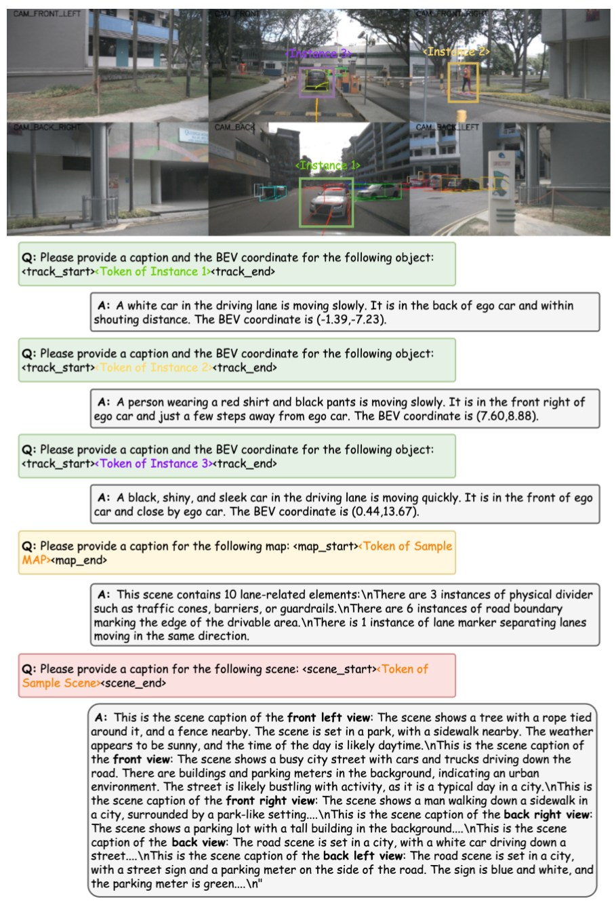
図6：nuScenes のサンプル 90 に基づく、ステージ1 データセットの可視化例 1。緑の枠はインスタンストークンのキャプション、黄色の枠は地図トークンのキャプション、赤の枠はシーントークンのキャプションを示す。
図中ラベル（和訳）：CAM_FRONT_LEFT / CAM_FRONT / CAM_FRONT_RIGHT / CAM_BACK_RIGHT / CAM_BACK / CAM_BACK_LEFT＝左前方／前方／右前方／右後方／後方／左後方カメラ、<Instance 1〜3>＝インスタンス 1〜3。
Q（インスタンス 1〜3 共通）：次の物体のキャプションと BEV 座標を示してください：<track_start><インスタンス N のトークン><track_end>
A（インスタンス 1）：走行車線上の白い車がゆっくり動いている。自車の後方、声の届く距離にいる。BEV 座標は (-1.39,-7.23)。
A（インスタンス 2）：赤いシャツと黒いズボンを着た人がゆっくり動いている。自車の右前方、自車からほんの数歩の距離にいる。BEV 座標は (7.60,8.88)。
A（インスタンス 3）：走行車線上の、黒く光沢のある洗練された車が速く動いている。自車の前方、自車の近くにいる。BEV 座標は (0.44,13.67)。
Q（地図）：次の地図のキャプションを示してください：<map_start><サンプル地図のトークン><map_end>
A：このシーンには車線関連の要素が 10 個含まれる。\n 交通コーン、バリア、ガードレールなどの物理的な分離帯が 3 個ある。\n 走行可能領域の端を示す道路境界が 6 個ある。\n 同方向に進む車線を分ける車線標示が 1 個ある。
Q（シーン）：次のシーンのキャプションを示してください：<scene_start><サンプルシーンのトークン><scene_end>
A：これは左前方視点のシーンキャプションである：シーンには、ロープが巻かれた木と、近くの柵が写っている。シーンは公園で、近くに歩道がある。天気は晴れのようで、時間帯はおそらく日中である。\n これは前方視点のシーンキャプションである：シーンには、乗用車やトラックが道を走る賑やかな市街地の通りが写っている。背景には建物とパーキングメーターがあり、都市環境であることを示している。典型的な街の一日であるため、通りはおそらく活気に満ちている。\n これは右前方視点のシーンキャプションである：シーンには、公園のような環境に囲まれた街の歩道を歩く男性が写っている….\n これは右後方視点のシーンキャプションである：シーンには、背景に高い建物がある駐車場が写っている….\n これは後方視点のシーンキャプションである：道路シーンは街中で、白い車が通りを走っている….\n これは左後方視点のシーンキャプションである：道路シーンは街中で、道路脇に道路標識とパーキングメーターがある。標識は青と白で、パーキングメーターは緑色である….\n"
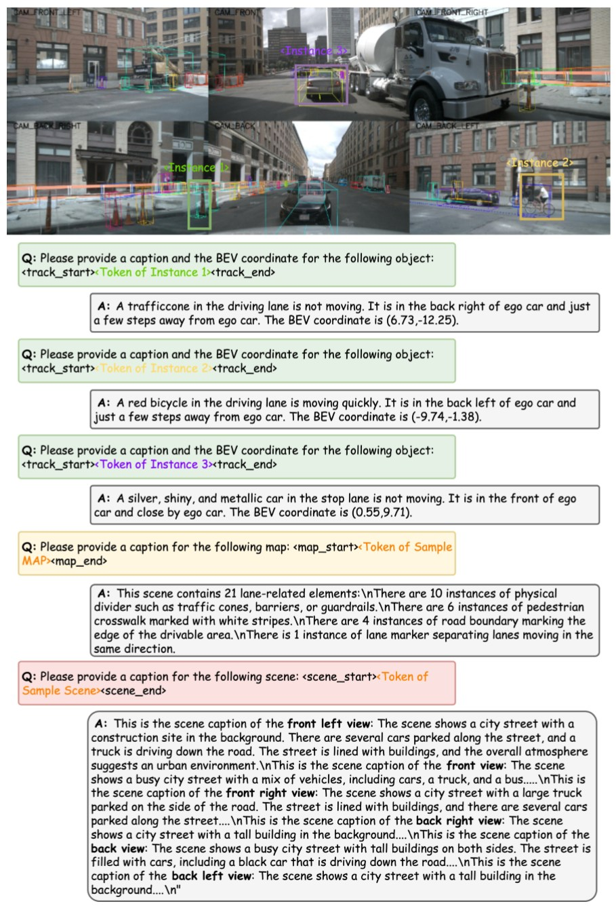
図7：nuScenes のサンプル 3287 に基づく、ステージ1 データセットの可視化例 2。緑の枠はインスタンストークンのキャプション、黄色の枠は地図トークンのキャプション、赤の枠はシーントークンのキャプションを示す。
図中ラベル（和訳）：カメラ名・Q の文言は図6と同じ。
A（インスタンス 1）：走行車線上のトラフィックコーン（原文 trafficcone）は動いていない。自車の右後方、自車からほんの数歩の距離にある。BEV 座標は (6.73,-12.25)。
A（インスタンス 2）：走行車線上の赤い自転車が速く動いている。自車の左後方、自車からほんの数歩の距離にいる。BEV 座標は (-9.74,-1.38)。
A（インスタンス 3）：停止車線上の、銀色で光沢のあるメタリックな車は動いていない。自車の前方、自車の近くにいる。BEV 座標は (0.55,9.71)。
A（地図）：このシーンには車線関連の要素が 21 個含まれる。\n 交通コーン、バリア、ガードレールなどの物理的な分離帯が 10 個ある。\n 白い縞で示された横断歩道が 6 個ある。\n 走行可能領域の端を示す道路境界が 4 個ある。\n 同方向に進む車線を分ける車線標示が 1 個ある。
A（シーン）：これは左前方視点のシーンキャプションである：シーンには、背景に工事現場がある市街地の通りが写っている。通り沿いに数台の車が駐車しており、トラックが道を走っている。通りには建物が立ち並び、全体の雰囲気は都市環境を示唆している。\n これは前方視点のシーンキャプションである：シーンには、乗用車、トラック、バスなどの車両が混在する賑やかな市街地の通りが写っている…..\n これは右前方視点のシーンキャプションである：シーンには、道路脇に大型トラックが停まっている市街地の通りが写っている。通りには建物が立ち並び、通り沿いに数台の車が駐車している….\n これは右後方視点のシーンキャプションである：シーンには、背景に高い建物がある市街地の通りが写っている….\n これは後方視点のシーンキャプションである：シーンには、両側に高い建物が並ぶ賑やかな市街地の通りが写っている。通りは車で埋まっており、道を走る黒い車もある….\n これは左後方視点のシーンキャプションである：シーンには、背景に高い建物がある市街地の通りが写っている….\n"
8 結果と考察
8.1 運転質問応答の結果
図8と図9は、nuScenes-QA、nuCaption、nuX の 3 つのデータセットから抽出した、運転に関連する多様な質問に対する OpenDriveVLA の応答の代表例を示す。これらの定性的結果は、知覚、常識的理解、文脈に応じた意思決定にわたる、モデルの多層的な推論能力を浮き彫りにしている。
図8では、モデルはスピードバンプ（減速帯）に接近して通過する際の自車の挙動を叙述し、周囲のシーンに根拠づけた因果的な説明を添えている。これは、運転判断に対する自らの解釈を反映した一貫性のある自然言語出力を生成するモデルの能力を示している。しかし、シーンレベルの記述では、画像中に歩行者が 1 人存在するにもかかわらず、右前方視点には歩行者が見えないというハルシネーションをモデルは起こしている。
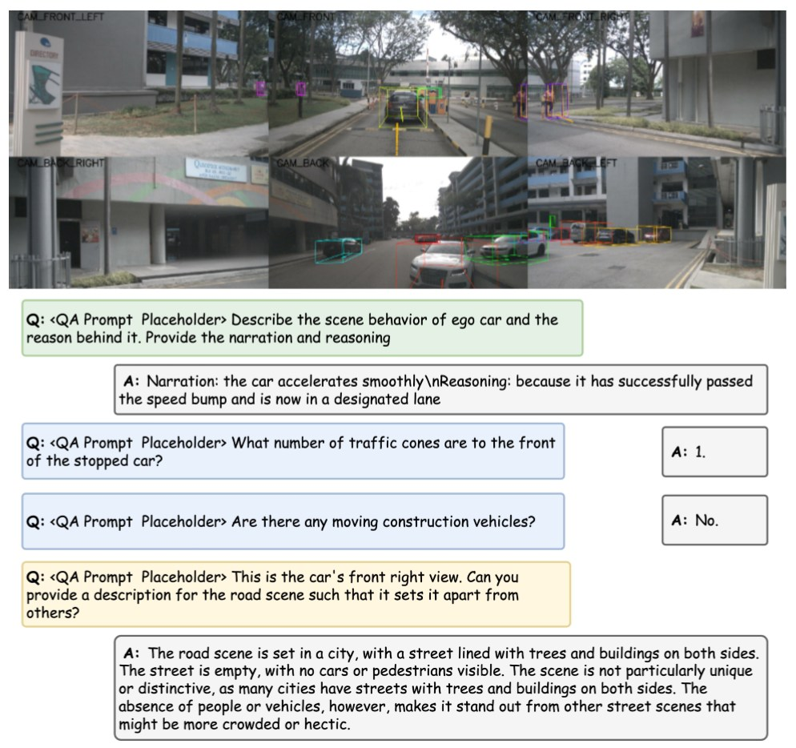
図8：nuScenes のサンプル 6801 に基づく、ステージ2 データセットの可視化例 1。緑の枠は nuX データセットの予測、青の枠は nuScenes-QA データセット、黄色の枠は nuCaption からのものである。
図中ラベル（和訳）：<QA Prompt Placeholder>＝QA プロンプトのプレースホルダ。
Q（緑）：自車のシーン上の挙動とその理由を説明せよ。叙述と推論を示せ。 A：叙述：車は滑らかに加速する\n推論：スピードバンプを無事に通過し、現在は指定された車線にいるため。
Q（青）：停止している車の前方にトラフィックコーンはいくつあるか？ A：1。
Q（青）：動いている工事車両はあるか？ A：いいえ。
Q（黄）：これは車の右前方視点である。他と区別できるように道路シーンを説明できるか？ A：道路シーンは街中で、両側に木々と建物が並ぶ通りである。通りには人けがなく、車も歩行者も見えない。多くの都市には両側に木々と建物が並ぶ通りがあるため、このシーンは特に独特でも特徴的でもない。しかし、人や車両がいないことが、より混雑した、あるいは慌ただしい他の通りのシーンとこのシーンを際立たせている。
図9は、交差点付近で複数のエージェントが相互作用する、より複雑な都市シナリオを示している。モデルは自車のマニューバを識別し、空間的文脈に根拠づけた因果的な説明を与えており、車両が交差点で曲がる際の位置を正しく特定している。シーンレベルの記述では、モデルは信号機の存在、横断歩道付近の歩行者、路肩に駐車している車両など、主要な静的・動的要素を根拠づけることができる。しかし、カメラ視点に言及する際、特に前方視点の識別において、キャプションには位置の不正確さが見られる。これは、異なるカメラ視点を区別するための明示的な教師信号なしに、カメラに依存しない形でシーンレベルのキャプションを用いてモデルを学習したことに起因する可能性がある。
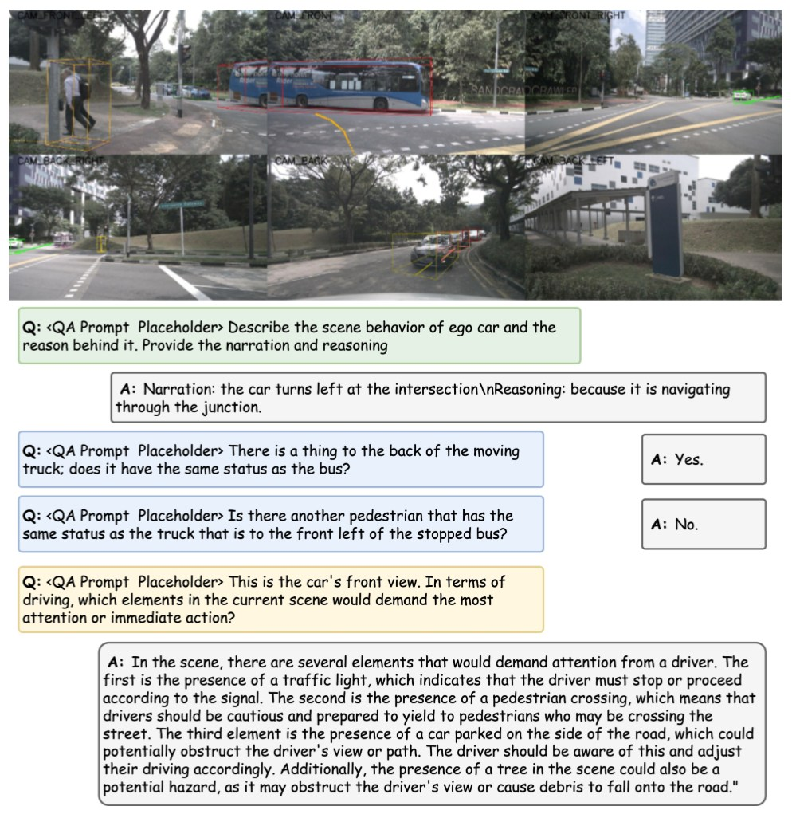
図9：nuScenes のサンプル 6801 に基づく、ステージ2 データセットの可視化例 2。緑の枠は nuX データセットの予測、青の枠は nuScenes-QA データセット、黄色の枠は nuCaption からのものである。
（訳注：図8と図9は異なるシーンであるが、キャプションではいずれも「Sample 6801」とされている。原文のまま訳出した。）
図中ラベル（和訳）：
Q（緑）：自車のシーン上の挙動とその理由を説明せよ。叙述と推論を示せ。 A：叙述：車は交差点で左折する\n推論：交差点を通り抜けているため。
Q（青）：動いているトラックの後方に何かがある。それはバスと同じ状態か？ A：はい。
Q（青）：停止しているバスの左前方にあるトラックと同じ状態の歩行者は他にいるか？ A：いいえ。
Q（黄）：これは車の前方視点である。運転の観点から、現在のシーンでどの要素が最も注意または即時の行動を要するか？ A：このシーンには、運転者の注意を要する要素がいくつかある。第一に信号機の存在であり、運転者は信号に従って停止または進行しなければならない。第二に横断歩道の存在であり、運転者は注意を払い、道路を横断している可能性のある歩行者に道を譲る準備をすべきである。第三に道路脇に駐車している車の存在であり、運転者の視界や進路を妨げる可能性がある。運転者はこれを認識し、それに応じて運転を調整すべきである。さらに、シーン内の木の存在も、運転者の視界を妨げたり、道路に落下物を生じさせたりする可能性があるため、潜在的な危険となりうる。"
8.2 エージェントの運動予測の結果
図10と図11は、ステージ2.5 のエージェント運動予測タスクにおける OpenDriveVLA の定性的結果を示す。ここでモデルは、エージェントの軌道、環境、自車状態について同時に推論する。
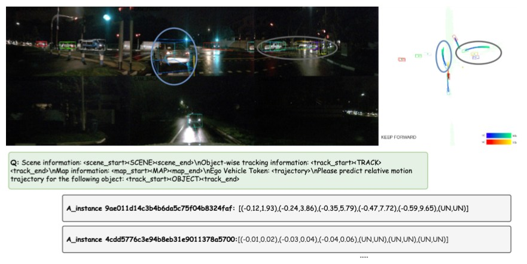
図10：nuScenes 検証セットのサンプル 8587 における、ステージ2.5 のエージェント・環境・自車の相互作用モデリングによるエージェント運動予測結果の例 1。
図中ラベル：KEEP FORWARD＝直進を続ける（運転コマンド）。Q はステージ2.5 のプロンプト（シーン情報、物体ごとの追跡情報、地図情報、自車トークンを与え、指定した物体 <OBJECT> の相対的な運動軌道の予測を求める）。A_instance <ID>＝各インスタンス（ID はトークン文字列）について予測された 6 点のウェイポイント列。UN は未定義（値なし）を表すと考えられる。
図10は、低照度条件下で複数の静的・動的エージェントが存在する夜間の市街地交差点を示している。図では 2 台の旋回車両を強調している。シーン右側の白いセダンに対する予測運動は、車線の向きや道路の意味と整合している。これに対し、自車前方の白い車両については、モデルは右にカーブする軌道を予測している。しかし、周囲の道路形状と車線構成を考えると、左折の方がより妥当なマニューバであろう。
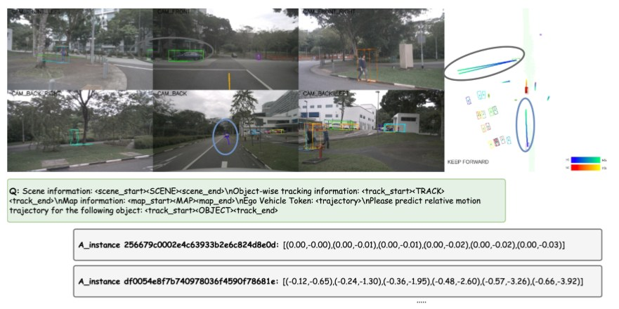
図11：nuScenes 検証セットのサンプル 32496 における、ステージ2.5 のエージェント・環境・自車の相互作用モデリング後のエージェント運動予測結果の例 2。
図中ラベル：CAM_FRONT_LEFT / CAM_FRONT / CAM_FRONT_RIGHT / CAM_BACK_RIGHT / CAM_BACK / CAM_BACK_LEFT＝各カメラ視点、KEEP FORWARD＝直進を続ける。Q と A_instance の意味は図10と同じ。
図11では、モデルは昼間のカーブした道路のシナリオにおいて、複数のエージェントの運動軌道を予測している。特に、可視化では 2 つの予測軌道を強調している。1 つは前方視点の灰色のセダン、もう 1 つは後方視点で観測される車両に対するものである。どちらの予測も、道路のレイアウトと周囲の文脈に整合した、それぞれ異なる運動パターンを反映している。この例は、部分的にしか観測できない環境の下で、妥当な運動の不確実性とエージェント固有の意図を捉えるモデルの能力を示している。
8.3 計画の結果
1) 先行手法との比較
図12は、複数の駐車車両がある困難な狭路シナリオにおける、OpenDriveVLA と UniAD［10］の開ループ計画結果の定性的比較を示す。
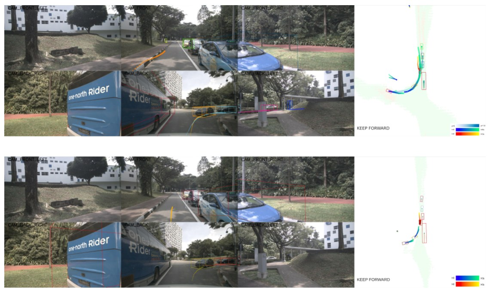
図12：開ループ計画の定性的比較。上：UniAD［10］の計画結果。下：OpenDriveVLA-7B（本手法）の計画結果。エージェントの運動予測の結果は、エージェント・環境・自車の相互作用ステージの後に可視化したものである。
図中ラベル：CAM_FRONT_LEFT / CAM_FRONT / CAM_FRONT_RIGHT / CAM_BACK_RIGHT / CAM_BACK / CAM_BACK_LEFT＝各カメラ視点、KEEP FORWARD＝直進を続ける（運転コマンド）。
このシナリオでは、UniAD は道路右側の駐車車両に過敏に反応し、不安定でジグザグした計画軌道となっている。これに対し、OpenDriveVLA は、周囲の物体から安全な距離を保ちつつ、意図された走行経路によりよく追従する、より滑らかで一貫した運動計画を生成する。これは、シーンの意味について推論し、頑健で空間的に根拠づけられた軌道を生成する、より強い能力を示している。
2) 運転指示追従の定性的結果
図13と図14は、左折、右折、直進といった異なる条件付き運転指示の下での OpenDriveVLA の軌道計画の挙動を示す。
図13は、nuScenes データセットにおける正解の指示が直進である、複雑な市街地の交差点を示している。新しい運転指示の下でも予測経路は安全でシーンの文脈とよく整合しており、衝突のない挙動を維持しつつ高レベルのコマンドを柔軟に解釈するモデルの能力を示している。同様に、図14は郊外環境における別の交差点シナリオを示している。レイアウトと視覚的文脈が異なるにもかかわらず、OpenDriveVLA は与えられた指示に合致するよう、計画した運動を一貫して安全に適応させている。これらの結果は、さまざまな環境にわたる OpenDriveVLA の指示追従能力と、指示条件付き計画における頑健性を示している。
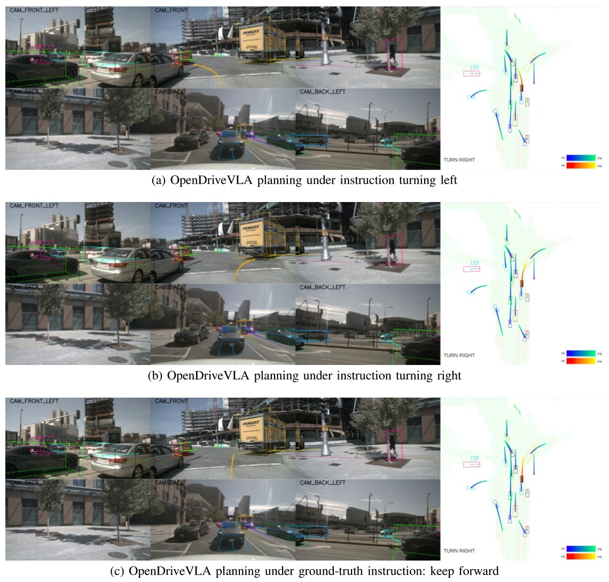
図13：異なる運転指示の下での、ステージ3 後の OpenDriveVLA の軌道計画結果の例 1。（a）左折の指示の下での OpenDriveVLA の計画。（b）右折の指示の下での OpenDriveVLA の計画。（c）正解の指示（直進）の下での OpenDriveVLA の計画。
図中ラベル：CAM_FRONT_LEFT / CAM_FRONT / CAM_BACK_RIGHT / CAM_BACK / CAM_BACK_LEFT＝各カメラ視点、TURN RIGHT＝右折。（訳注：BEV 図中のコマンド表示は 3 枚とも「TURN RIGHT」となっており、サブキャプションの指示（左折／右折／直進）と一致しない。原図のまま掲載した。）
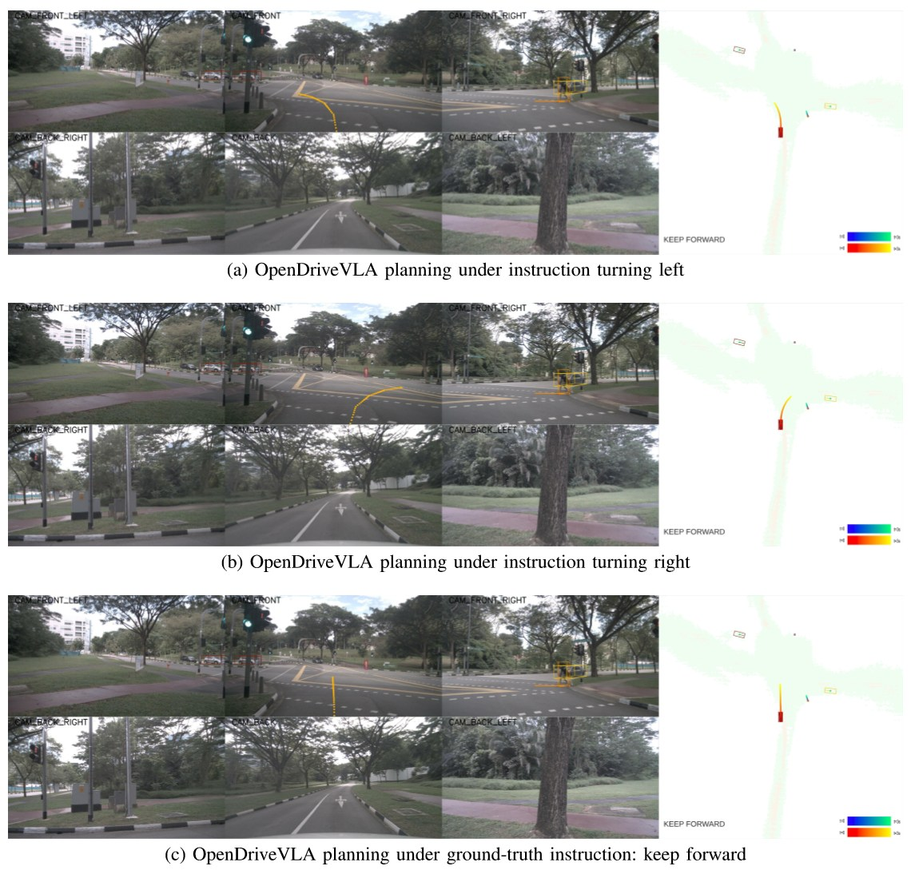
図14：異なる運転指示の下での、ステージ3 後の OpenDriveVLA の軌道計画結果の例 2。（a）左折の指示の下での OpenDriveVLA の計画。（b）右折の指示の下での OpenDriveVLA の計画。（c）正解の指示（直進）の下での OpenDriveVLA の計画。
図中ラベル：CAM_FRONT_LEFT / CAM_FRONT / CAM_FRONT_RIGHT / CAM_BACK_RIGHT / CAM_BACK / CAM_BACK_LEFT＝各カメラ視点、KEEP FORWARD＝直進を続ける。（訳注：BEV 図中のコマンド表示は 3 枚とも「KEEP FORWARD」となっている。原図のまま掲載した。）
8.4 考察
1) モデルサイズに関する結果
本文の結果（表1、2、3）は、モデルサイズの増大が概して性能向上につながる一方で、より大きな OpenDriveVLA-7B モデルが、すべてのベンチマークにわたって小さな 0.5B 版や 3B 版を一貫して上回るわけではないことを示している。具体的には、Nu-X データセットでは、0.5B モデルが 7B 版よりも明らかに高い CIDEr と ROUGE-L のスコアを達成している。開ループ軌道計画では、3 つのモデル間の平均 L2 誤差と衝突率の差は比較的小さい。7B モデルは全体として依然として競争力があるものの、その性能向上は常に有意であるとは限らず、場合によっては小さなモデルに劣る。
実験での観察に基づくと、いくつかの理由が考えられる。第一に、大規模言語モデルのスケーリングに伴う性能向上は、通常、大量かつ多様な学習データを利用できるかどうかに依存する。表10に詳述したように、現在の設定で用いている指示チューニングデータとドメイン固有の運転アノテーションは、7B モデルの表現能力を十分に活用するには不十分である可能性がある。特に自動運転ドメインでは、大規模なオープンソースの視覚言語データセットがいまだ非常に少ない。そのため、モデルのスケーリングから期待される改善は、すべてのタスクで一貫して実現されてはいない。
第二に、より大きな自己回帰モデルは、生成時に言語の事前知識により強く依存する傾向がある。構造化されたマルチモーダル推論タスクでは、この依存が、特に細粒度の空間理解や事実の正確さを要するシナリオにおいて、正確な視覚的根拠づけを維持するモデルの能力を弱める可能性がある。小さなモデルは容量が限られているものの、視覚入力と言語入力の間のより強い結合を保持でき、制約された教師信号の下でより安定した挙動につながりうる。これはまた、さらなる発展を促すには追加の高品質な視覚・テキストデータが必要であることを示唆している。
第三に、大きなモデルの最適化のダイナミクスは、ドメイン固有のタスクにおいてハイパーパラメータや実験設定に対してより敏感になりうる。学習データセットに十分な多様性がない場合、大きなモデルは学習セット中の支配的なパターンに過学習し、推論時の頑健性と汎化性能が低下する可能性がある。
まとめると、データソースが限られたこのドメイン固有の自動運転タスクにおいて、モデルサイズだけでは性能の頑健な指標にはならない。むしろ、データの量と質、そして多段階の学習戦略が、頑健でスケーラブルな性能を達成するうえで決定的な役割を果たす。
2) 現在の限界
OpenDriveVLA は有望な結果を達成しているが、いくつかの限界が残っている。第一に、モデルは指示チューニングによって獲得した暗黙的な推論パターンに依拠しており、推論時に明示的な段階的思考連鎖による演繹を行わない。この設計は推論効率の維持に役立つが、推論性能を低下させ（訳注：原文は「eteriorate」であり、deteriorate の誤植と解した）、複雑なシナリオに対処するモデルの能力を制限する可能性がある。第二に、LLM の自己回帰的な性質は推論レイテンシをもたらす。トークン長を慎重に制御しても、逐次的なデコーディング過程は高速走行シナリオへの展開におけるボトルネックであり続ける。リアルタイム要件を満たすには、モデルの量子化やデコーディング戦略のさらなる改善が有益であろう。最後に、現在の計画評価は開ループ設定に限定されている。これは現実の運転における対話的なフィードバックのダイナミクスを捉えておらず、頑健性の過大評価につながる可能性があり、OpenDriveVLA を閉ループの、言語を考慮したシミュレーション環境へ拡張することの重要性を浮き彫りにしている。
3) 閉ループ計画への拡張
前述のとおり、OpenDriveVLA の現在の計画評価は nuScenes データセット上の開ループ設定で行われている。この設定は制御された再現可能なベンチマークを可能にする一方、実世界の交通における自車とエージェントの相互作用のフィードバックダイナミクスを考慮しない。先行研究も、nuScenes の開ループベンチマーク（訳注：原文は「nuscences」）は過度に楽観的な結論につながりうることを示している［34］。より信頼性の高い計画評価のために、nuPlan［59］、Bench2Drive［60］、NaviSim［61］などの確立された閉ループベンチマークがいくつか導入されている。
残念ながら、これらのベンチマークには現在、ドメイン固有の LLM ベースの自動運転モデルの学習の中核となる視覚言語アノテーションが欠けている。一方、TOD3Cap、nuScenes QA、nuCaption、nuX などの nuScenes 派生データセットは、インスタンスレベルおよびシーンレベルのキャプションや質問・回答ペアという形で豊富なマルチモーダルの教師信号を提供している。これらの追加データセットは複数の先行研究による大規模なアノテーション作業の成果であり、LLM ベースの自動運転モデルの学習と評価の両方の基盤となっている。OpenDriveVLA を閉ループ評価へ拡張するため、今後の課題として、インスタンスレベル、地図レベル、シーンレベルの記述と、運転挙動に紐づいた質問・回答ペアを（半）自動的に生成する、自動データ生成パイプラインの構築が挙げられる。
これらの限界にもかかわらず、OpenDriveVLA は開ループ計画と、nuScenes-QA、nuCaption、nuX を含む複数の運転 VQA ベンチマークの両方で高い性能を示している。モデルは一貫して、頑健なシーン理解、正確な指示追従、意味的に根拠づけられた行動生成を示している。これらの結果は、提案したモデルと学習手法の有効性を裏づけるとともに、閉ループ評価フレームワークへの将来の拡張に向けた確かな実験的基盤を提供するものである。